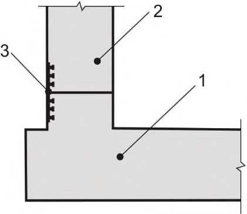
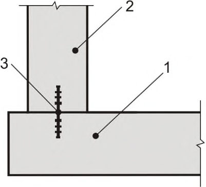
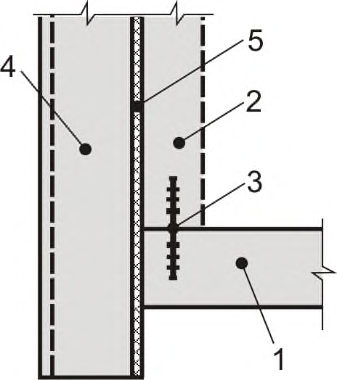
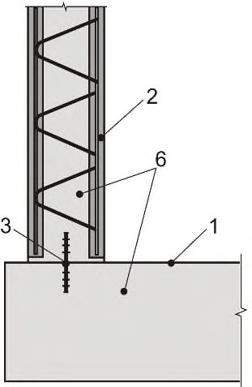
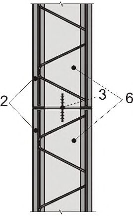
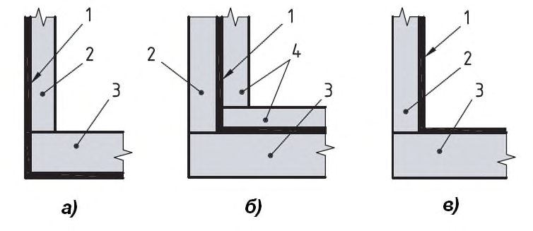
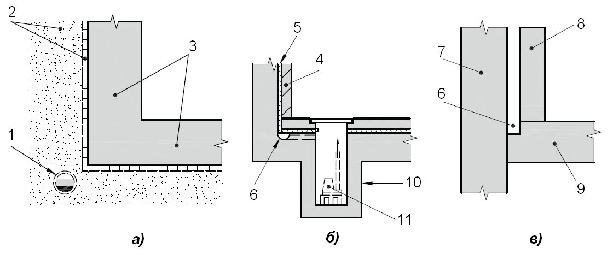
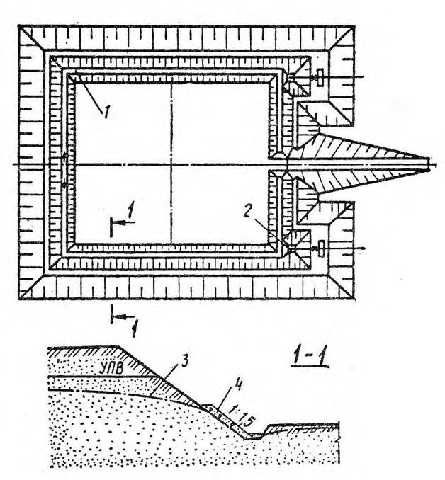
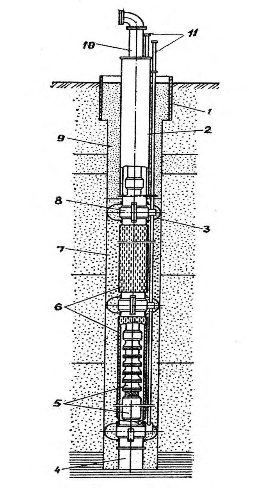
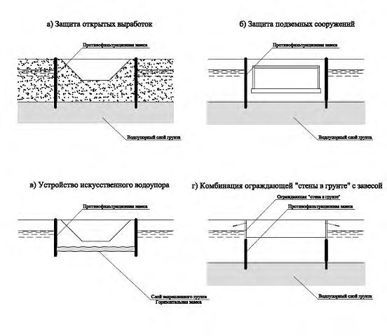

СП 250.1325800.2016 «Здания и сооружения. Защита от подземных вод»
О документе: разработчики, утверждение, регистрация, ключевые слова
СВОД ПРАВИЛ СП 250.1325800.2016
Издание официальное
- 1 Область применения
..................................................................................................................................
- 2 Нормативные ссылки
.................................................................................................................................
- 3 Термины и определения
............................................................................................................................
- 4 Общие положения
......................................................................................................................................
- 4.1 Общие требования к системам защиты строительных котлованов, траншей и подземных выработок ...................................................................................................................................................
- 4.2 Требования к системам защиты сооружений, эксплуатируемых в условиях подземных вод. Классификация систем защиты ...............................................................................................................
- 4.3 Исходные данные для проектирования защиты от подземных вод
...............................................
- 5 Принципы выбора способов защиты сооружений от подземных вод
..................................................
- 6 Гидрогеологические расчеты при проектировании водозащитных мероприятий при строительстве подземных сооружений .......................................................................................................
- 6.1 Постановка задачи
...............................................................................................................................
- 6.2 Аналитические расчеты
......................................................................................................................
- 6.3 Математическое моделирование геофильтрации
.............................................................................
- 7 Проектирование строительного водопонижения
...................................................................................
- 7.1 Общие требования
...............................................................................................................................
- 7.2 Водопонизительные скважины
..........................................................................................................
- 7.3 Расчет скважинных водопонизительных систем. Общие указания
...............................................
- 7.4 Иглофильтры
.......................................................................................................................................
- 7.5 Расчет иглофильтровых водопонизительных систем
......................................................................
- 7.6 Дренажи
...............................................................................................................................................
- 7.7 Расчет трубчатых дренажей
...............................................................................................................
- 8 Проектирование противофильтрационных завес
...................................................................................
- 9 Требования к проектированию систем защиты типа А (первичная защита)
........................................
- 9.1 Общие положения
...............................................................................................................................
- 9.2 Конструктивные мероприятия
...........................................................................................................
- 9.3 Технологические мероприятия
..........................................................................................................
- 9.4 Требования к материалам, бетонным смесям и бетонам
.................................................................
- 10 Требования к проектированию систем защиты типа В (вторичная защита)
.......................................
- 10.1 Исходные данные для проектирования гидроизоляционных покрытий
.....................................
- 10.2 Классификация гидроизоляционных покрытий
.............................................................................
- 10.3 Требования, предъявляемые к гидроизоляционным покрытиям
..................................................
10.4 Требования, предъявляемые к герметизации деформационных швов
........................................
- 11 Требования к проектированию систем защиты типа С
.........................................................................
- 11.1 Общие указания
.................................................................................................................................
- 11.2 Пустотные дренажные системы с мембранами
..............................................................................
- 11.3 Пустотные дренажные системы без мембран
.................................................................................
12 Требования к защите конструкций от коррозии
....................................................................................
13 Требования к производству работ
..........................................................................................................
Библиография
................................................................................................................................................
УДК 624.134.4 + 624.137:624.1 ОКС \_\_\_\_\_\_
Ключевые слова: подземные сооружения; заглубленные части зданий; системы защиты типов А (первичная), В (вторичная) и С; УПВ; водопонижение; водонепроницаемые конструкции без вторичной защиты; гидроизоляция; герметизация швов; гидрогеологические условия
ОРГАНИЗАЦИЯ-РАЗРАБОТЧИК
АО «НИЦ «Строительство»
Заместитель генерального А.И. Звездов директора по научной работе АО «НИЦ «Строительство»
Руководитель Директор НИИОСП И.В. Колыбин
| СП 250.1325800.2016 разработки | СП 250.1325800.2016 разработки | СП 250.1325800.2016 разработки |
|---|---|---|
| Ответственный исполнитель | Зав. лабораторией НИИОСП | А.Б. Мещанский |
| Исполнители | Ст. науч. сотрудник НИИОСП | М.М. Кузнецов |
| Ст. науч. сотрудник НИИОСП | И.С. Паршуков | |
| Доктор техн. наук НИИЖБ | С.С. Каприелов | |
| Доктор техн. наук НИИЖБ | В.Ф. Степанова | |
| Доктор техн. наук НИИЖБ | Н.К. Розенталь | |
| Канд. техн. наук НИИЖБ | Г.С. Кардумян | |
| Канд. техн. наук НИИЖБ | А.Н. Болгов | |
| При участии ЗАО «Триада-Холдинг» | При участии ЗАО «Триада-Холдинг» | При участии ЗАО «Триада-Холдинг» |
| Доктор техн. наук | А.А. Шилин | |
| Кандидат техн. наук | М.В. Зайцев |
1ИСПОЛНИТЕЛИ
Научно-исследовательский, проектно-изыскательский и конструкторско-технологический институт оснований и подземных сооружений им. Н.М. Герсеванова (НИИОСП им. Н.М. Герсеванова) - институт АО «НИЦ «Строительство»
Научно-исследовательский, проектно-конструкторский и технологический институт бетона и железобетона» им. А.А. Гвоздева (НИИЖБ им. А.А. Гвоздева) - институт АО «НИЦ «Строительство» при участии ЗАО «Триада-Холдинг»
2ВНЕСЕН Техническим комитетом по стандартизации ТК 465 «Строительство»
3 ПОДГОТОВЛЕН к утверждению Департаментом градостроительной деятельности и архитектуры Министерства строительства и жилищно-коммунального хозяйства Российской Федерации (Минстрой России)
4 УТВЕРЖДЕН приказом Министерства строительства и жилищно-коммунального хозяйства Российской Федерации от 08 июля 2016 г. № 484/пр и введен в действие с 01 сентября 2016 г.
5 ЗАРЕГИСТРИРОВАН Федеральным агентством по техническому регулированию и метрологии (Росстандарт)
6ВВЕДЕН ВПЕРВЫЕ
В случае пересмотра (замены) или отмены настоящего свода правил соответствующее уведомление будет опубликовано в установленном порядке. Соответствующая информация, уведомление и тексты размещаются также в информационной системе общего пользования - на официальном сайте разработчика (Минстрой России) в сети Интернет
© Минстрой России, 2016
Настоящий нормативный документ не может быть полностью или частично воспроизведен, тиражирован и распространен в качестве официального издания без разрешения Федерального агентства по техническому регулированию и метрологии
Настоящий свод правил разработан с учетом обязательных требований технических регламентов, отраженных в федеральных законах от 27 декабря 2002 г. № 184-ФЗ «О техническом регулировании» и от 30 декабря 2009 г. № 384-ФЗ «Технический регламент о безопасности зданий и сооружений», в развитие федеральных нормативных документов в области строительства.
Свод правил содержит основные положения, относящиеся к проектированию систем защиты подземных и заглубленных сооружений различного назначения от подземных вод.
В требованиях к проектированию систем защиты для сооружений, возводимых и эксплуатируемых в условиях подземных вод, учтены положения Британского стандарта BS 8102:2009 «Code of practice for protection of below ground structures against water from the ground» (Свод правил по защите конструкций от подземных вод).
Работа выполнена авторским коллективом: АО «НИЦ «Строительство» - НИИОСП им. Н.М. Герсеванова и НИИЖБ им. А.А. Гвоздева ( д-р техн. наук В.П. Петрухин, канд. техн. наук И.В. Колыбин, инженер А.Б. Мещанский - руководители темы; д-р техн. наук С.С. Каприелов, д-р техн. наук Н.К. Розенталь, д-р техн. наук В.Ф. Степанова; канд. техн. наук В.Н. Корольков, канд. техн. наук Г.С. Кардумян, канд. техн. наук А.Н. Болгов; инженеры М.М. Кузнецов, И.С. Паршуков ) с участием ЗАО Триада-Холдинг ( д-р техн. наук А.А. Шилин; канд. техн. наук М.В. Зайцев ).
Building and structures. Protection against groundwater
| Дата введения 2016-09-01 |
|---|
| Настоящий свод правил устанавливает базовые принципы принятия технических ре- шений при проектировании систем защиты подземных и заглубленных сооружений (кон- струкций) (далее - подземные сооружения) различного назначения от подземных вод. |
| 8736-2014 Песок для строительных работ. Технические условия 10178-85 Портландцемент и шлакопортландцемент. Технические условия |
| ГОСТ 24211-2008 Добавки для бетонов и строительных растворов. Общие техниче- |
| земных вод заглубленных частей жилых и общественных зданий и сооружений, производ- и вспомогательных зданий и сооружений, промышленных предприятий. |
| ственных Настоящий свод правил не распространяется на специальные сооружения. |
| В настоящем своде правил использованы нормативные ссылки на следующие доку- менты: |
| ГОСТ 8267-93 Щебень и гравий из плотных горных пород для строительных работ. Технические условия |
| ГОСТ |
| ГОСТ ГОСТ 22266-2013 Цементы сульфатостойкие. Технические условия |
| усло- |
| ГОСТ 23732-2011 Вода для бетонов и строительных растворов. Технические |
| ские условия |
| ГОСТ 27006-86 Бетоны. Правила подбора состава |
| ГОСТ 30515-2013 Цементы. Общие технические |
| условия |
| ____________________________________________________________________ |
ГОСТ 31108-2003 Цементы общестроительные. Технические условия
ГОСТ 31384-2008 Защита бетонных и железобетонных конструкций от коррозии. Общие технические требования
СП 20.13330.2011 «СНиП 2.01.07-85* Нагрузки и воздействия»
СП 22.13330.2011 «СНиП 2.02.01-83* Основания зданий и сооружений»
СП 28.13330.2012 «СНиП 2.03.11-85 Защита строительных конструкций от коррозии» (с изменением № 1)
СП 31.13330.2012 «СНиП 2.04.02-84* Водоснабжение. Наружные сети и сооружения» (с изменениями № 1, № 2)
СП 32.13330.2012 «СНиП 2.04.03-85 Канализация. Наружные сети и сооружения» (с изменением № 1)
СП 45.13330.2012 «СНиП 3.02.01-87 Земляные сооружения, основания и фундаменты»
СП 63.13330.2012 «СНиП 52-101-2003 Бетонные и железобетонные конструкции. Основные положения» (с изменением № 1, № 2)
СП 70.13330.2012 «СНиП 3.03.01-87 Несущие и ограждающие конструкции»
СП 71.13330.2011 «СНиП 3.04.01-87 Изоляционные и отделочные покрытия»
СП 72.13330.2011 «СНиП 3.04.03-85 Защита строительных конструкций и сооружений от коррозии»
СП 102.13330.2012 «СНиП 2.06.09-84 Туннели гидротехнические»
СП 103.13330.2012 «СНиП 2.06.14-85 Защита горных выработок от подземных и поверхностных вод»
СП 104.13330.2011 «СНиП 2.06.15-85 Инженерная защита территорий от затопления и подтопления»
СП 120.13330.2012 «СНиП 32-02-2003 Метрополитены» (с изменением № 1)
СП 122.13330.2012 «СНиП 32-04-97 Тоннели железнодорожные и автодорожные»
Примечание - При пользовании настоящим сводом правил целесообразно проверить действие ссылочных стандартов и сводов правил в информационной системе общего пользования - на официальном сайте федерального органа исполнительной власти в сфере стандартизации в сети Интернет или по ежегодному информационному указателю «Национальные стандарты», который опубликован по состоянию на 1 января текущего года, и по выпускам ежемесячного информационного указателя «Национальные стандарты» за текущий год. Если заменен ссылочный документ, на который дана недатированная ссылка, то рекомендуется использовать действующую версию этого документа с учетом всех внесенных в данную версию изменений. Если заменен ссылочный документ, на который дана датированная ссылка, то рекомендуется использовать версию этого документа с указанным выше годом утверждения (принятия). Если после утверждения настоящего стандарта в ссылочный документ, на который дана датированная ссылка, внесено изменение, затрагивающее положение, на которое дана ссылка, то это положение рекомендуется применять без учета данного изменения. Если ссылочный документ отменен без замены, то положение, в котором дана ссылка на него, рекомендуется применять в части, не затрагивающей эту ссылку. Сведения о действии сводов правил целесообразно проверить в Федеральном информационном фонде технических регламентов и стандартов.
3 Термины и определения
В настоящем своде правил применены следующие термины с соответствующими определениями:
- 3.1 барражный эффект: Эффект, возникающий вследствие полного или частичного перекрытия водоносного горизонта подземным сооружением; проявляется в подъеме уровней подземных вод перед преградой фильтрационному потоку и их снижении за ней.
- 3.2 безнапорный горизонт: Водоносный горизонт, отметка уровня подземных вод в котором не превышает отметку его кровли.
- 3.3 верификация: Проверка, способ подтверждения каких-либо положений, расчетных алгоритмов, программ и процедур путем их сопоставления с опытными (эталонными или эмпирическими) данными, алгоритмами и результатами.
- 3.4 водоносный горизонт: Литологически относительно выдержанная и единая в гидравлическом отношении толща водопроницаемых грунтов, пустоты в которых заполнены подземными водами.
- 3.5 водонепроницаемые конструкции: Бетонные и железобетонные конструкции или элементы сооружения, непроницаемые для подземных вод в условиях эксплуатации.
- 3.6 водоносный комплекс: Объединение нескольких водоносных горизонтов, имеющих непосредственную гидравлическую связь.
- 3.7 водоотлив: Отведение и удаление подземных вод с поверхности дна котлованов, траншей и выработок в грунте.
- 3.8 водопункт: Естественный выход или искусственное вскрытие подземных вод: источник (родник), скважина, колодец и т.п.
- 3.9 водоупор: Слабопроницаемый слой грунта, фильтрацией через который в определенных условиях можно пренебречь.
- 3.10 вторичная защита: Защита строительных конструкций от коррозии и протечек, реализуемая после изготовления (возведения) конструкции и подразумевающая устройство оклеечной, свободно монтируемой, обмазочной, металлической и прочих видов изоляции и других мер, исключающих или препятствующих прямому контакту агрессивной среды с материалом конструкций.
- 3.11 геотекстиль: Водопроницаемые тканые, нетканые, вязаные и композиционные полотна из синтетических волокон, выполняющие три основные функции в массиве грунта - сепарацию, фильтрацию и армирование.
- 3.12 герметизация шва: Обеспечение непроницаемости узла сопряжения между водонепроницаемыми конструкциями или элементами сооружения.
- 3.13 гидрогеологический прогноз: Комплекс работ расчетного характера, цель которых - качественная и количественная оценка изменений гидрогеологических условий, вызванных строительством.
- 3.14 гидроизоляция: Защита строительных конструкций, зданий и сооружений от проникновения воды (антифильтрационная гидроизоляция) или материала сооружений от вредного воздействия агрессивной среды (антикоррозионная гидроизоляция).
- 3.15 граничные гидрогеодинамические условия: Значения напора подземных вод или его производных на границах фильтрационного потока; различают граничные условия:
- I рода - на границе задано значение напора подземных вод,
- II рода - на границе задано значение расхода подземных вод,
- III рода - на границе задана прямо пропорциональная связь между расходом через границу и напором на ней.
- 3.16 депрессионная воронка: Положение уровня водоносного горизонта при осуществлении водопонижения.
- 3.17 дренажная система: Инженерно-техническое сооружение, предназначенное для сбора и удаления подземных вод.
- 3.18 заглубленное сооружение: Сооружение с подземной и надземной частями.
- 3.19 компенсатор: Устройство, устанавливаемое в деформационных или рабочих швах, обеспечивающее водонепроницаемость швов при деформации конструкций или раскрытии трещин.
- 3.20 напорный горизонт: Водоносный горизонт, отметка уровня подземных вод в котором превышает отметку его кровли.
- 3.21 наружная стена: Ограждающая конструкция сооружения, опирающаяся на фундаментную плиту.
- 3.22 окружающая застройка: Существующие здания, сооружения и инженерные коммуникации, расположенные в близи объектов нового строительства или реконструкции.
[СП 22.13330.2011, приложение А]
- 3.23 основание сооружения: Массив грунта, взаимодействующий с сооружением. [СП 22.13330.2011, приложение А]
- 3.24 первичная защита: Защита строительных конструкций от коррозии и протечек, реализуемая на стадии изготовления (возведения) конструкции за счет свойств бетона и конструктивных мер, достаточных для сохранения эксплуатационных свойств конструкций, предусмотренных проектом.
- 3.25 подземное сооружение или подземная часть сооружения: Сооружение или эксплуатируемая часть сооружения, расположенная ниже уровня поверхности земли (планировки).
[СП 22.13330.2011, приложение А]
- 3.26 подземные воды: Воды природного и техногенного характера, находящиеся в толще горных пород (в грунтовой толще).
- 3.27 подземные выработки: Шахты, штольни и иные искусственные полости в массиве грунта, устраиваемые закрытым способом для размещения в них подземных сооружений.
- 3.28 противофильтрационная завеса, ПФЗ : Преграда, устраиваемая в грунтовом массиве и прорезающая водоносные горизонты с целью исключения или снижения водопритоков к подземному сооружению.
- 3.29 пьезометрический уровень: Уровень, устанавливающийся в скважинах-пьезометрах, вскрывающих напорный горизонт подземных вод.
- 3.30 система защиты от подземных вод: Комплекс конструкторско-технологических мероприятий, предотвращающих проникновение подземных вод в пространство строящихся и эксплуатируемых сооружений и обеспечивающих коррозионную стойкость конструкций.
- 3.31 специальное сооружение: Объект обороны и безопасности, конструкция которого рассчитана на воздействие нагрузок, имеющих место в чрезвычайных ситуациях
- 3.32 строительная выемка: Котлован, траншея, шахта и иные земляные выработки для устройства подземных сооружений открытым способом.
- 3.33 термоусадочная трещиностойкость: Стойкость конструкции к образованию трещин, связанных с напряжениями, вызванными явлениями усадки бетона и перепадами температур в конструкции.
- 3.34 уровень подземных вод, УПВ : Уровень подземных вод в безнапорном горизонте; в напорном горизонте - пьезометрический уровень.
- 3.35 эффективные напряжения: Напряжения в основании, передающиеся через скелет грунта.
4 Общие положения
Защита от подземных вод строительных котлованов, траншей и подземных выработок должна предусматриваться проектами водопонизительных мероприятий и противофильтрационных устройств, обеспечивающих требуемые условия эффективного и безопасного производства строительных работ.
Защита подземных сооружений в процессе их эксплуатации должна предусматриваться проектами этих сооружений, а также проектами соответствующих мероприятий и устройств на прилегающей территории.
При проектировании защиты тоннельных сооружений помимо положений настоящего свода правил следует руководствоваться СП 28.13330, СП 72.13330, СП 102.13330, СП 120.13330, СП 122.13330, в зависимости от функционального назначения тоннельного сооружения и условий эксплуатации.
4.1 Общие требования к системам защиты строительных котлованов, траншей и подземных выработок
- 4.1.1 К системам защиты строительных котлованов (траншей) и подземных выработок предъявляются следующие требования:
- предотвращение поступления подземных вод в котлован (траншею) или выработку;
- осушение или закрепление обводненного массива грунта вблизи тоннелей, разрабатываемых горным способом или механизированными щитами без пригруза забоя;
- предупреждение прорывов подземных вод или выпора водоупорных слоев грунта в днище котлована в случаях наличия в водовмещающих грунтах напорных водоносных горизонтов, а также обеспечение во всех случаях фильтрационной и суффозионной прочности основания;
- предотвращение неблагоприятного изменения природных гидрогеологических условий и свойств грунтов и развития в результате этого опасных процессов в грунтовой толще;
- обеспечение стабильности экологических условий окружающей среды и сохранности зданий и сооружений на прилегающей территории;
- обеспечение безопасности при выполнении работ;
- обеспечение условий для эффективного выполнения строительных работ.
4.1.2 Для защиты строительных котлованов и выработок от подземных вод применяют следующие способы:
- водопонижение - искусственное понижение уровня подземных вод до требуемой отметки;
- устройство противофильтрационной завесы - создание малопроницаемой строительной конструкции (или искусственно закрепленного массива грунта), заглубленной в водоупор и практически исключающей приток подземных вод в котлован или выработку;
- искусственное замораживание водонасыщенных грунтов для их временного укрепления путем создания ледогрунтовой завесы.
Допускается применять сочетание указанных способов защиты.
4.1.3 Выбор способа защиты должен учитывать инженерно-геологические и гидрогеологические условия территории строительства, глубину и габариты котлована или подземной выработки, наличие и техническое состояние зданий и сооружений окружающей застройки, особенности производства и сроки выполнения подземных строительных работ, возможные изменения физико-механических свойств грунтов основания проектируемого сооружения, прогноз влияния способа защиты на окружающую среду и существующие сооружения.
4.1.4 При выборе системы защиты строительного котлована или выработки от подземных вод необходимо учитывать, что устройство противофильтрационных завес, в отличие от водопонижения, не приводит к истощению запасов подземных вод и не вызывает деформаций земной поверхности и сооружений в районе защищаемых объектов. В то же время вызываемое ими нарушение структуры потока может привести к изменению уровней подземных вод, и, как следствие, к подтоплению прилегающей к участку строительства территории и окружающей застройки. Системы защиты следует выбирать с учетом результатов прогнозных гидрогеологических расчетов.
4.1.5 Для обоснования выбора системы защиты строительного котлована в проекте расчетами должны определяться:
- пьезометрические уровни подземных вод в характерных точках депрессионной кривой (под соседними зданиями, коммуникациями и т.п.), время достижения проектного сниженного уровня подземных вод, производительность водопонизительных систем, обеспечивающих заданное снижение УПВ, возможные притоки в открытые выработки дождевых, талых и техногенных вод;
- производительность водопонизительной системы, обеспечивающей снижение напоров в водоносном слое под дном котлована или строительной выработки, исключающих выпор водоупора, перекрывающего напорный горизонт;
- значения притоков подземных вод через противофильтрационные завесы и ожидаемые градиенты напора;
- ожидаемые деформации земной поверхности в зоне влияния водопонижения и значения возможного повышения и понижения уровней подземных вод при устройстве противофильтрационных завес;
- водопропускная способность, размеры, число, места размещения и другие параметры устройств для организации водопонижения;
- потребность в материальных и энергетических ресурсах.
4.1.6 В случаях, когда по материалам инженерных изысканий не представляется возможным выполнить обоснованные расчеты для окончательного выбора системы защиты, следует предусматривать проведение дополнительных исследований на строительной площадке (измерения уровней подземных вод, проведение опытных откачек).
4.1.7 Возможность прорывов подземных вод или выпора водоупорных слоев грунта в днище котлована, фильтрационного и суффозионного разрушений основания следует проверять и обосновывать расчетами по первой группе предельных состояний в соответствии с требованиями СП 22.13330.
4.1.8 Эффективность системы защиты от подземных вод должна оцениваться на основе решения прогнозных гидрогеологических задач, постановка которых включает и не включает проектируемые способы защиты.
4.2 Требования к системам защиты сооружений, эксплуатируемых в условиях подземных вод. Классификация систем защиты
4.2.1 Проектирование систем защиты подземных сооружений от подземных вод должно осуществляться с учетом функционального назначения сооружений и их конструктивных особенностей. При этом следует стремиться к выбору такой системы, которая потребует минимальных суммарных затрат в строительный и эксплуатационный периоды при соблюдении требований 4.2.2.
4.2.2 При выборе системы защиты сооружения от подземных вод должны быть обеспечены:
- защита внутреннего объема подземного сооружения от проникновения подземных вод;
- защита конструкций подземного сооружения от агрессивного воздействия подземных и поверхностных вод и грунтов;
- эффективность работы защитных мероприятий в течение всего срока эксплуатации сооружения;
- заданный термовлажностный режим в помещениях подземного сооружения;
- минимальное негативное воздействие (исключение превышения допустимых значений дополнительных осадок, изменений УПВ и пр.) на здания и сооружения, расположенные вблизи нового строительства;
- ремонтопригодность запроектированной защиты;
- пожарная безопасность защищаемого сооружения;
- соответствие требованиям санитарных и экологических норм, отсутствие отрицательного влияния на существующую растительность, исключение заболачивания территории и загрязнения подземных вод.
4.2.3 Системы защиты сооружений от подземных вод следует разделять на типы:
А - возведение водонепроницаемых (первичная защита) монолитных и сборно-монолитных железобетонных конструкций без дополнительной (вторичной) защиты при условии обеспечения герметизации стыков, сопряжений, швов.
Примечание - Конструкции из сборных железобетонных элементов следует применять только при соответствующем обосновании, так как герметизация швов затруднительна;
В - применение гидроизоляционных и антикоррозионных покрытий (вторичная защита);
C - применение дренажных систем, позволяющих выполнять каптирование воды, просочившейся через ограждающую конструкцию (специальная защита).
Примечания
1 Для снижения гидростатического давления на системы защиты сооружения от подземных вод и уменьшения рисков поступления подземных вод в его внутренние помещения, дополнительно к указанным системам защиты, может быть предусмотрено:
- устройство внешних (по отношению к защищаемому сооружению) дренажей различного типа;
- предотвращение или снижение притока подземных вод в грунтовый массив, непосредственно прилегающий к сооружению, путем устройства ПФЗ различного типа.
2 Схематическое изображение систем защиты типов А, В и С приведено на рисунках 4.1-4.3.
4.2.4 Системы защиты типа А следует классифицировать по принципам устройства элементов герметизации в швах:
- в монолитных конструкциях - рисунок 4.1 а, б, в;
- в сборно-монолитных конструкциях - рисунок 4.1 г, д.
Примечание - Для сборных конструкций следует выполнять омоноличивание швов.
1 - водонепроницаемая фундаментная плита; 2 водонепроницаемая монолитная стена ( а, б, в) /сборный стеновой блок ( г, д) ; 3 - элементы герметизации; 4 стена в грунте; 5 - скользящий слой; 6 - монолитный бетон

Примечание - Принципы устройства герметизации швов: в монолитных конструкциях:
- а) внешняя (сопряжение плиты и стены или стен);
- б) внутренняя (сопряжение плиты и стены или стен); в) внутренняя при наличии стены в грунте (сопряжение плиты и стены); в сборно-монолитных конструкциях:
- г) внутренняя (сопряжение стеновой конструкции и плиты); д) внутренняя (сопряжение стеновых конструкций).
- 4.2.5 Системы защиты типов В и С следует также классифицировать по месту их расположения в составе конструктивных элементов сооружения.
Системы защиты типа В (рисунок 4.2) могут быть:
- наружными (тип В-1);
- сэндвичного типа, т.е. расположенные внутри конструкций (тип В-2);
- внутренними (тип В-3).
Системы защиты типа С (рисунок 4.3) могут быть:
- наружными (тип С-1);
- внутренними (тип С-2), которые подразделяются на пустотные дренажные системы с мембранами и без них.

а) наружная гидроизоляция; б) гидроизоляция сэндвичного типа; в) внутренняя гидроизоляция 1 - гидроизоляционный материал; 2 - наружная стена сооружения; 3 - фундаментная плита; 4 - прижимные конструкции
Рисунок 4.2 Вторичная защита - тип В

а) наружный дренаж; б) внутренний дренаж с мембраной; в) внутренний дренаж без мембраны 1 - дренажная труба; 2 - дренажный слой грунта или мембрана; 3 - наружные стены и фундамент; 4 - прижимные конструкции; 5 - дренажная мембрана; 6 - дренажный канал; 7 - стена в грунте; 8 - фальш-стена; 9 - фундаментная плита; 10 - приямок; 11 - насос
Рисунок 4.3 Варианты системы защиты типа С
4.2.6 При необходимости различные типы систем защиты допускается применять совместно (комбинированная защита). Комбинированная защита должна предусматриваться, когда применение только одного из указанных в 4.2.3 типов систем защиты приведет к существенным рискам проникновения подземных вод во внутренние помещения или к нарушению требований 4.2.2.
4.3 Исходные данные для проектирования защиты от подземных вод
В состав исходных данных для проектирования систем защиты сооружений от подземных вод должны входить материалы инженерных изысканий на площадке строительства, включая инженерно-геологические, геотехнические, метеорологические и экологические изыскания, в обязательном порядке содержащие следующую информацию:
- уровни подземных вод верховодки и водоносных горизонтов (комплексов);
- значения коэффициента фильтрации грунтов, слагающих грунтовый массив территории строительства;
- результаты химического анализа подземных вод и грунтов по показателям, приведенным в СП 28.13330, с указанием значений глубины отбора проб;
- содержание в воде и грунте потенциально опасных компонентов, не указанных в СП 28.13330 (технические продукты, кислоты болотных вод и др.);
- прогноз изменения уровней и состава подземных вод в связи с влиянием строительных работ.
Исследование химического состава подземных вод и грунтов должно включать все инженерно-геологические элементы, контактирующие со строительными конструкциями.
5 Принципы выбора способов защиты сооружений от подземных вод
5.1 При выборе типа системы защиты сооружения следует учитывать инженерногеологические и гидрогеологические условия участка строительства, включая физико-механические и фильтрационные свойства грунтов, значение гидростатического напора, степень агрессивности подземных вод и грунтов, наличие блуждающих токов, возможность проявления опасных геологических процессов на территории района строительства (карсто- и оползнеобразование, оседание и сдвижение горных пород и т. п.).
При выборе типа системы защиты для сооружений из железобетона, независимо от применяемого варианта, следует выполнять конструктивные и технологические мероприятия, обеспечивающие получение бездефектных и непроницаемых конструкций и их сопряжений по принципам системы защиты типа А.
5.2 Выбор системы защиты должен учитывать:
- функциональное назначение, конструктивные особенности и глубину заложения проектируемого сооружения;
- степень агрессивного воздействия грунта и подземных вод на материалы конструкции и защиты, возможность замораживания и оттаивания;
- значения нагрузок, передаваемых сооружением на основание;
- прогнозируемые осадки и деформации проектируемого сооружения, относительную неравномерность деформаций его частей;
- технологию возведения проектируемого сооружения;
- предполагаемые сроки и календарный период строительства;
- наличие необходимых материалов и оборудования;
- техническую возможность размещения в пределах или вблизи строительной площадки защитных дренажных устройств или противофильтрационных завес;
- наличие и необходимость переноса существующих инженерных коммуникаций в пределах площадки строительства;
- влияние проектируемой системы защиты на окружающую территорию и природную среду.
5.3 Выбранная система защиты должна быть надежной и эффективной в конкретных условиях строительного объекта, долговечной и способной обеспечивать требования по эксплуатации сооружения в соответствии с 4.2.2 и 5.8.
5.4 Для выбора рациональной системы защиты следует выделять три категории инженерно-геологических условий площадки строительства, характеризуемые положением уровня подземных вод (в том числе «верховодки») относительно подземного сооружения:
- высокий УПВ - уровень подземных вод постоянно располагается выше подошвы фундамента защищаемого сооружения;
- низкий УПВ - уровень подземных вод постоянно располагается ниже подошвы фундамента защищаемого сооружения;
- переменный УПВ - положение уровня подземных вод по отношению к подошве фундамента изменяется во времени.
Примечание - При выборе типа системы защиты следует учитывать, что применение внешних дренажных устройств может привести к преобразованию высокого и переменного УПВ в низкий УПВ.
5.5 При выборе типа защиты необходимо выявлять и оценивать потенциальные риски проникновения подземных вод в сооружение, в том числе обусловленные следующими факторами:
- подъемом УПВ вследствие непредвиденных ситуаций природного и техногенного характера и, соответственно, увеличением гидростатического давления на систему защиты;
- проникновением подземных вод внутрь сооружения через трещины в конструкциях и дефектные конструктивные узлы, а также через отверстия для ввода инженерных коммуникаций;
- отсутствием технической возможности проведения ремонтных мероприятий;
- ненадлежащим обслуживанием в процессе эксплуатации средств системы защиты типа С, например сбоями в работе насосного оборудования.
- 5.6 Обоснование выбранной системы защиты следует осуществлять с учетом технико-экономических расчетов.
5.7 Для выбора системы защиты следует оценить возможность применения систем различных типов в зависимости от положения уровня подземных вод относительно подземного сооружения в соответствии с 5.4 и конструктивных особенностей сооружения, руководствуясь таблицей 5.1.
Таблица 5.1 - Указания по применению систем защиты сооружений от подземных вод
| Положение УПВ в соответствии с 5.4 | Конструктивные особенности со- | Возможность применения системы защиты (4.2.3, 4.2.5) | Возможность применения системы защиты (4.2.3, 4.2.5) | Возможность применения системы защиты (4.2.3, 4.2.5) |
|---|---|---|---|---|
| Положение УПВ в соответствии с 5.4 | Конструктивные особенности со- | Тип А | Тип B | Тип C |
| Низкий | оружения - | Применяют | Применяют | Применяют |
| Переменный | Наружный контур со- оружения в котловане из сборных конструк- ций (кроме железобе- тонных) | - | Применяют В-1, при отсутствии агрессии применяют В-2 и В-3 | Применяют С-1 |
| Переменный | Наружный контур со- оружения в котловане из сборных железобе- тонных конструкций | Применяют при усло- вии возможности орга- низации герметичного стыка | Применяют В-1, при отсутствии агрессии применяют В-2 и В-3 | Применяют С-1 |
| Переменный | Наружный контур со- оружения - «стена в грунте» | Применяют при усло- вии: - «стена в грунте» до- ступна для обслужива- ния и ремонта; - к «стене в грунте» внутри примыкает же- лезобетонная стена | Применяют В-2 и В-3 | Применяют С-2 |
| Переменный | Наружный контур со- оружения в котловане из монолитных железо- бетонных конструкций | Применяют | Применяют | Применяют |
| Переменный | Наружный контур со- оружения, устраивае- мого закрытым спосо- бом | Применяют | Применяют В-2 и В-3 | Применяют С-2 |
| Высокий | Наружный контур со- оружения в котловане из сборных конструк- ций (кроме железобе- тонных) | - | В-1 применяют в ком- бинации с другими ти- пами защиты; при от- сутствии агрессии при- меняют В-2 с прижим- ной конструкцией из железобетона | Применяют С-1 при условии ремонтопри- годности. При высоких фильтрационных харак- теристиках грунтов ос- нования не рекоменду- ется |
| Высокий | Наружный контур со- оружения в котловане из сборных железобе- тонных конструкций | Применяют при усло- вии возможности орга- низации герметичного стыка | В-1 применяют в ком- бинации с другими ти- пами защиты; при от- сутствии агрессии при- меняют В-2 с прижим- ной конструкцией из железобетона | Применяют С-1 при условии ремонтопри- годности. При высоких фильтрационных харак- теристиках грунтов ос- нования не рекоменду- ется |
| Высокий | Наружный контур со- оружения - «стена в грунте» | Применяют при усло- вии: - «стена в грунте» до- ступна для обслужива- ния и ремонта; - к «стене в грунте» внутри примыкает же- лезобетонная стена - комбинации с дру- гими типами защиты | Применяют В-2; В-3 применим при обеспе- чении конструктивной связи со «стеной в грунте» | Применяют С-2 |
| Высокий | Наружный контур со- оружения в котловане из монолитных железо- бетонных конструкций | Применяют | Применяют В-1; В-2 и В-3 применяют, если в железобетонных кон- струкциях ограничива- ется раскрытие трещин | Применяют, при высо- ких фильтрационных характеристиках грун- тов основания не реко- мендуется |
| Высокий | Наружный контур со- оружения, устраивае- мого закрытым спосо- бом | Применяют | Применяют В-2 и В-3, рекомендуются в ком- бинации с другими ти- пами защиты | Применяют С-2 |
Примечания
1 Для снижения рисков проникновения подземных вод в сооружение при высоком УПВ рекомендуется предусматривать комбинированную защиту. С увеличением значения гидростатического напора на сооружение должны возрастать требования к надежности систем защиты от подземных вод.
2 При проектировании комбинированной защиты применяемые материалы и решения должны быть совместимыми.
- 5.8. При выборе типа и конструктивного решения системы защиты от подземных вод необходимо учитывать класс сооружения по условиям эксплуатации, который в зависимости от функции и предполагаемого использования сооружения определяется согласно таблице 5.2.
Таблица 5.2 - Определение класса сооружения по условиям эксплуатации
| Класс сооружения | Условия эксплуатации помещений | Дополнительные требования | Применение |
|---|---|---|---|
| I | Не допускаются активные про- течки (капельные, струйные), в том числе временно через тре- щины; не допускается наличие намока- ний на поверхности конструк- ций | Отсутствие конденсата (требуются дополни- тельные мероприятия: вентиляция, отопление) | Жилые и администра- тивные здания, торго- вые помещения и склад- ские помещения с высо- кими требованиями |
| II | Не допускаются активные (ка- пельные, струйные) протечки; допускаются наличие намоканий и образование конденсата | - | Подземные гаражи, кол- лекторы (каналы) под- земных инженерных коммуникаций, склад- ские помещения с низ- кими требованиями |
Примечания
1 Класс сооружения по условиям эксплуатации должен задаваться в задании на проектирование защиты от подземных вод.
- 2 Для поддержания температурно-влажностного режима и исключения образования конденсата следует предусматривать системы отопления и вентиляции. Проектирование таких систем выходит за рамки настоящего свода правил.
- 5.9 Последовательность этапов выбора и проектирования систем защиты от подземных вод рекомендуется принимать в соответствии с рисунком 5.1.

Рисунок 5.1 - Схема последовательности этапов проектирования защиты сооружения от подземных вод
5.10 Проектирование систем защиты типов А, В и С следует выполнять с учетом классификации подземных вод по степени их агрессивного воздействия на строительные конструкции в соответствии с СП 28.13330.
6 Гидрогеологические расчеты при проектировании водозащитных мероприятий при строительстве подземных сооружений
Положения настоящего раздела относятся к следующим гидрогеологическим расчетам, сопровождающим проектирование защиты сооружений от подземных вод:
- расчеты производительности водопонизительных систем и оценка влияния строительного водопонижения на гидрогеологические условия района строительства;
- расчет водопритоков к дренажам, защищающим в эксплуатационный период подземные части зданий от подземных вод, и оценка их влияния на гидрогеологические условия района строительства;
- прогноз изменения гидрогеологических условий района строительства под влиянием устройства подземных частей сооружений, полностью или частично перекрывающих водоносные горизонты (оценка барражного эффекта).
6.1Постановка задачи
На первом этапе должна быть проведена предварительная гидрогеологическая схематизация площадки строительства на основе результатов выполненных на ней инженерно-геологических изысканий. Результатом такой схематизации должно стать расчленение гидрогеологического разреза площадки строительства на водоносные горизонты (комплексы) с выделением слабопроницаемых (водоупорных) пластов. Рекомендуется построение карт уровней подземных вод выделенных водоносных горизонтов (комплексов) и глубин их залегания от поверхности земли на территории площадки строительства. На этом же этапе должно быть получено предварительное представление о степени взаимосвязи выделенных водоносных горизонтов (комплексов) между собой.
Примечание - Предварительный анализ гидравлической связи может быть выполнен путем сравнения абсолютных отметок уровней подземных вод различных водоносных горизонтов и комплексов.
Примечания
1 Взаимное влияние проектируемого сооружения и подземных вод отсутствует, если сооружение располагается выше УПВ, ограждение котлована проницаемо для подземных вод или также располагается выше их уровня.
2 Практически полное отсутствие взаимовлияния проектируемого сооружения и подземных вод характерно также для незначительного (менее 30 %) перекрытия водоносного пласта непроницаемым ограждением котлована (например, «стеной в грунте») при расположении подошвы фундамента сооружения выше уровня подземных вод. При этом результаты совместного рассмотрения гидрогеологических условий и проектных решений с обоснованием нецелесообразности дальнейших гидрогеологических расчетов также следует оформлять в виде пояснительной записки (заключения), включаемой в состав проектной документации.
- большая глубина залегания начального уровня подземных вод первого от поверхности водоносного горизонта и наличие непроницаемой ограждающей конструкции строительной выемки;
- большая глубина залегания начального уровня подземных вод первого от поверхности водоносного горизонта и применение строительного водопонижения или постоянно действующих дренажных устройств при незначительном проектном значении снижения уровня.
В первом случае величина потенциального подъема уровня в результате проявления барражного эффекта может оказаться существенно меньше глубины его залегания под подошвой фундаментов зданий или подземными коммуникациями. В этой ситуации допускается применение эмпирических зависимостей только для оценки максимальной величины барражного эффекта на контуре непроницаемого ограждения котлована. Расчет развития барражного эффекта на территории, прилегающей к стройплощадке, в указанной ситуации не выполняется.
Во втором случае незначительное снижение уровней подземных вод не вызывает значимых с практической точки зрения изменений гидрогеологических условий и не приводит к дополнительным осадкам сооружений и коммуникаций на территории, прилегающей к площадке строительства. В такой ситуации расчет изменения гидрогеологических условий не выполняется. Достаточным является только расчет водопритоков к водопонизительной или дренажной системе, который следует выполнять в соответствии с последующими положениями 6.1.
Примечание - Снижение уровней подземных вод не приводит к дополнительным осадкам сооружений и коммуникаций при величине дополнительных эффективных напряжений, вызванных этим снижением, меньшем 50 % величины напряжений от собственной массы грунта, залегающего над водоносной толщей. Для ориентировочных оценок следует принимать отсутствие дополнительных осадок сооружений и коммуникаций при снижении уровня подземных вод на величину не более 80 % глубины залегания водоносной толщи под этими сооружениями и коммуникациями. Отсутствие дополнительных осадок поверхности земли следует принимать при снижении уровня подземных вод на величину не более 80 % мощности зоны аэрации (в безнапорных условиях) или глубины залегания кровли обводненной толщи (в напорных условиях).
Полученные выводы и результаты следует оформлять в виде пояснительной записки (заключения), включаемой в состав проектной документации.
- определение области влияния строительных мероприятий на гидрогеологические условия;
- сбор и анализ материалов по природным условиям и техногенной нагрузке на подземные воды (в случае наличия по ней данных и их доступности) в пределах области влияния;
- гидрогеологическая схематизация всей области влияния строительства;
- геофильтрационная схематизация;
- выбор расчетного метода.
Границы области влияния строительных мероприятий в случае перекрытия водоносных горизонтов (комплексов) следует принимать удаленными от проектируемого сооружения на расстояние не менее трех плановых размеров его подземной части вкрест потока подземных вод.
На основании проведенной схематизации должна быть обоснована глубина рассмотрения гидрогеологического разреза при дальнейших построениях. В расчетную часть гидрогеологического разреза должны быть включены все водоносные горизонты (комплексы), в которых располагается подземное сооружение, а также водоносные горизонты (комплексы), имеющие с ними существенную гидравлическую взаимосвязь.
Примечания
1 Основой для проведения гидрогеологической схематизации должны быть гидрогеологические карты и разрезы, обобщающие информацию о геолого-гидрогеологических условиях рассматриваемой территории, а также региональные описания этих условий.
2 Оценка степени взаимосвязи водоносных горизонтов (комплексов) на качественном уровне может быть выполнена на основе совместного анализа карт уровней подземных вод этих горизонтов (комплексов), построенных для всей выделенной области в целом, на количественном - с применением результатов опытнофильтрационных работ на площадке строительства или участках-аналогах, а при отсутствии таковых - по справочным данным.
3 Перетекание через водоупорное основание самого нижнего водоносного горизонта (комплекса), в котором располагается подземное сооружение, следует учитывать при одновременном выполнении двух условий:
- расход водообмена с нижележащим горизонтом (комплексом) в пределах области влияния строительных мероприятий составляет не менее 10 % в общем балансе водоносного горизонта (комплекса), в котором располагается подземное сооружение;
- ожидаемое изменение уровня подземных вод в водоносном горизонте (комплексе), в котором располагается подземное сооружение, составляет не менее 10 % разницы уровней подземных вод в этом и нижележащем горизонтах (комплексах).
4 Включение нижележащего водоносного горизонта (комплекса) в качестве расчетного слоя является обязательным, если расход водообмена с вышележащим горизонтом (комплексом), в котором располагается подземное сооружение, составляет не менее 10 % в общем балансе этого водоносного горизонта (комплекса) в пределах области влияния строительных мероприятий.
6.1.10.1 Обоснование режима потока во времени
Решение задач, возникающих при строительстве и эксплуатации подземных и заглубленных сооружений в зависимости от их характера может проводиться как в стационарной, так и нестационарной постановке. При прогнозировании барражного эффекта режим фильтрации следует принимать стационарным, поскольку наибольший интерес представляет конечное распределение уровней подземных вод, сформированное после стабилизации возмущений фильтрационного поля, вызванных устройством непроницаемого ограждения котлована или подземного сооружения. При расчетах строительного водопонижения режим потока, как правило, следует принимать нестационарным с целью определения изменений во времени расходов водопритоков и формирующейся депрессионной воронки.
Расчет дренажей и оценку их влияния следует выполнять, как правило, в стационарной постановке.
6.1.10.2 Обоснование пространственной структуры потока
При решении гидрогеологических задач, связанных со строительством, в большинстве случаев следует рассматривать упрощенную плоско-пространственную структуру течения - двумерную в плане в водоносных пластах и одномерную по вертикали в слабопроницаемых слоях. При существенном несовершенстве (по степени вскрытия) внешних и внутренних границ (реки, дренажи, водозаборы и т. п.) вертикальную деформацию потока в водоносном пласте следует учитывать путем введения дополнительных локальных фильтрационных сопротивлений.
6.1.10.3 Обоснование граничных условий потока
Для расчетной области фильтрации должны быть определены ее внешние границы, замыкающие область по периферии, а также, в случае их наличия, внутренние границы (водоемы и водотоки, линейные дренажные устройства, непроницаемые границы, локальные области разгрузки и т. п.). Для каждой границы описывается ее пространственное положение, определяются гидродинамический род условия и его количественные характеристики. Исключением является проведение геофильтрационных расчетов с применением аналитических зависимостей, в которых задание внешних границ в случае неограниченного в плане водоносного пласта не требуется.
При решении нестационарных задач кроме граничных условий для расчетной области должны быть установлены начальные условия, определяющие состояние уровенной поверхности на момент начала решения задачи.
Примечания
1 Внешние границы расчетной области фильтрации целесообразно проводить по естественным границам потоков подземных вод - контурам водоемов и водотоков, на которых задаются граничные условия I или III рода, а также по непроницаемым контурам (например, подземные водоразделы) с заданием на них частного случая граничного условия II рода (непроницаемая граница).
2 При проведении расчетов с применением методов математического моделирования в случае отсутствия указанных выше границ следует задавать виртуальные внешние границы расчетной области, на которых реализуются условия I и/или II рода (частный случай этого условия - непроницаемая граница). Эти границы следует задавать с применением карт уровней подземных вод. Обязательным требованием является недопустимость распространения влияния строительных мероприятий до таких виртуальных границ, т. к. в противном случае в приграничных областях в натурных условиях произойдет изменение структуры потоков подземных вод, и заданные граничные условия не будут соответствовать реально существующим.
6.1.10.4 Обоснование распределения внутренних источников и стоков
На этом этапе схематизации устанавливаются положение и интенсивность различных форм поступления и оттока воды из расчетной области, не включенных в описание граничных условий. К ним следует относить инфильтрационное питание, водозаборные или нагнетательные скважины, водообмен через нижнюю границу модели.
Примечание - Водообмен через нижнюю границу модели следует реализовывать путем задания на ней (на подошве слабопроницаемого пласта, залегающего в основании нижнего из включенных в модельное рассмотрение водоносных горизонтов) уровней подземных вод нижезалегающего водоносного пласта. В случае разрыва на нижней границе сплошности потока здесь должны быть установлены напоры, равные абсолютным отметкам подошвы слабопроницаемого пласта. При обосновании на этапе гидрогеологической схематизации отсутствия значимого водообмена через нижнюю границу модели, она может быть задана по подошве нижнего из рассматриваемых водоносных пластов и рассматриваться в качестве непроницаемой.
6.1.10.5 Обоснование пространственного распределения фильтрационных параметров
Этот этап схематизации следует выполнять в виде послойных карт параметров, необходимых для конкретного расчета. К фильтрационным параметрам относятся:
- коэффициент фильтрации водовмещающих отложений или проводимость водоносного пласта;
- коэффициент фильтрации слабопроницаемых пластов;
- гравитационная и упругая водоотдача или уровне- и пьезопроводность (при решении нестационарных задач).
- Реальное распределение каждого из фильтрационных параметров в процессе схематизации должно быть приведено к одной из наиболее употребительных схем:
- однородный пласт - при хаотической неоднородности параметра с несущественной амплитудой изменчивости;
- упорядоченно-неоднородный пласт - при существенной амплитуде значений параметра и их закономерном изменении;
- существенно-неоднородный пласт - в случае хаотического изменения параметра в значительных пределах.
- выбранные для расчета аналитические зависимости и допущения, принятые при их обосновании, полностью соответствуют проведенной геофильтрационной схематизации;
- отсутствует достаточный объем данных для проведения достоверной геофильтрационной схематизации за пределами участка строительства.
Применение аналитических зависимостей для оценки влияния строительного водопонижения и дренажей на гидрогеологические условия допускается в двух вышеназванных случаях при изометричной форме водопонизительного или дренажного контура.
6.2Аналитические расчеты
6.3Математическое моделирование геофильтрации
6.3.1.1 Для учета нелинейной структуры реального фильтрационного потока рекомендуется применять неравномерную разбивку расчетной области с уменьшением размеров блоков вблизи участков максимальной деформации потока (противофильтрационные завесы, дренажи, водопонизительные скважины, естественные внутренние границы и т. д.).
Оптимальный шаг сеточной разбивки территории, непосредственно прилегающей к участку строительства, устанавливается исходя из размеров моделируемого сооружения, его конфигурации, расстояния до ближайших сооружений и, как правило, не должен превышать 5-10 м. По мере удаления от участка строительства шаг сеточной разбивки допускается постепенно (не менее чем через 7 блоков) увеличивать; при этом длины сторон соседних блоков не должны отличаться более чем в 1,5-2 раза. Длины сторон блоков на участке строительства и вблизи границ модели не должны отличаться более чем в 5 раз.
6.3.1.2 Для временной дискретизации процесса (при решении нестационарных задач) общее расчетное время следует разбить на ряд последовательных временныʹх интервалов. Необходимо учитывать, что даже при отсутствии в ряде расчетных методов в явном виде ограничений на размер временнóго шага удовлетворительная точность решения на каждый конкретный интересующий момент времени достигается не ранее чем через три временныʹх шага.
6.3.2.1 При постановке расчетов «в напорах» (6.1.13, 6.1.15) верификация заключается в решении на модели обратной задачи с целью уточнения представленных в процессе геофильтрационной схематизации параметров и граничных условий.
При постановке расчетов «в напорах» в процессе решения обратной задачи воспроизводятся натурные условия, существующие в пределах области моделирования до начала строительства рассматриваемого объекта. Как правило, верификацию модели следует проводить в стационарной постановке. Основным критерием достоверности построенной геофильтрационной модели служит удовлетворительное совпадение натурных и модельных уровней подземных вод в рассматриваемых водоносных горизонтах. Решение обратной задачи выполняется в виде итерационного перебора ряда прямых задач с различными значениями уточняемых параметров в характерном диапазоне их изменений.
Примечание - Следует учитывать, что одновременный подбор нескольких параметров, в частности коэффициентов фильтрации (проводимости) водоносных пластов и коэффициентов фильтрации разделяющих толщ или коэффициентов фильтрации (проводимости) водоносных пластов и инфильтрационного питания, приводит к неоднозначному решению обратной задачи. При таком подборе могут быть оценены только соотношения между искомыми параметрами. В этой связи уточнению имеет смысл подвергать обычно слабо изученные коэффициенты фильтрации слабопроницаемых разделяющих слоев и значения инфильтрационного питания, а значения коэффициента фильтрации (проводимости) водоносных пластов должны быть предварительно определены по результатам опытных опробований пласта и лабораторных исследований или, в крайнем случае, по данным физико-механического состава водовмещающих отложений.
Повышение степени достоверности решения обратной задачи может быть достигнуто при наличии данных о расходах потока подземных вод, получаемых, в первую очередь, из сведений о работе водозаборных скважин, систем водопонижения и дренажей, а также данных о расходах водообмена между подземными и поверхностными водами. В случае наличия таких данных следует применять еще один критерий достоверности построенной модели - удовлетворительное совпадение натурных и модельных расходов подземных вод.
6.3.2.2 При постановке расчетов «в понижениях» (6.1.13-6.1.14) верификация модели может быть выполнена на основе данных по эксплуатации водозаборных скважин, систем водопонижения и дренажей (их производительности и вызванных ими изменениях уровней подземных вод). В этом случае критерием достоверности построенной геофильтрационной модели служит удовлетворительное совпадение натурных и модельных изменений уровней подземных вод.
При моделировании в пределах небольших по размеру зон влияния водопонизительных или дренажных мероприятий, когда формирование водопритоков и воронки депрессии в основном определяется геофильтрационными параметрами, полученными на площадке строительства, верификацию геофильтрационной модели, построенной для решения «в понижениях», допускается не проводить.
- 6.3.3.1 При решении задач, связанных с расчетом строительного водопонижения, применяющегося в строительный период для защиты котлована или подземной выработки от подземных вод, и оценкой его влияния на гидрогеологические условия района строительства, следует определять:
- дебит водопонизительной системы, обеспечивающий снижение уровней подземных вод до проектных отметок за период времени, предусмотренный проектом производства работ (ППР);
- дебиты водопонизительной системы, обеспечивающие поддержание уровней подземных вод на проектных отметках в течение всего периода работы строительного водопонижения;
- значения снижения уровней подземных вод на конечный момент осуществления строительного водопонижения.
6.3.3.2 При решении задач, связанных с расчетом дренажей, применяющихся в эксплуатационный период для защиты подземной части проектируемого сооружения от подземных вод, и оценкой их влияния на гидрогеологические условия района строительства, следует определять:
- значение водопритока к дренажам;
- значения снижения уровней подземных вод под влиянием дренажа;
- изменение балансовых характеристик потока подземных вод под влиянием дренажа.
6.3.3.3 При расчетах барражного эффекта следует определить величины изменений уровней подземных вод, вызванных перекрытием водоносного горизонта подземной частью проектируемого сооружения. Для получения максимальных оценок изменений уровней подземных вод подземную часть сооружения следует считать водонепроницаемой.
- конструкция подземной части проектируемого сооружения;
- геологическое строение района строительства;
- гидрогеологические условия района строительства;
- геофильтрационная схематизация природных и техногенных условий района строительства с обоснованием метода выполнения геофильтрационных расчетов.
Описание геологического строения и гидрогеологических условий приводится для всей области влияния строительных мероприятий и иллюстрируется комплектом карт и схем.
К тексту отчета прилагаются следующие графические материалы:
- карта фактического материала с контурами проектируемого сооружения и зданий окружающей застройки;
- геолого-гидрогеологический разрез (один или несколько - в зависимости от сложности природных условий) через всю область влияния строительных мероприятий;
- карты уровней подземных вод рассматриваемых водоносных горизонтов (комплексов).
При необходимости, определяемой степенью сложности геологогидрогеологических условий, в состав отчета должны быть включены карты (схемы) четвертичных и дочетвертичных отложений, рельефа поверхности земли и кровли водоносных горизонтов (комплексов) и разделяющих их слабопроницаемых пластов, другой графический материал, необходимый для понимания позиций гидрогеологической и геофильтрационной схематизаций.
- верификация (калибровка) геофильтрационной модели;
- результаты прогнозных геофильтрационных расчетов.
6.4.2.1 Результаты верификации геофильтрационной модели представляются в графической и табличной формах. При проведении расчетов с применением решения «в напорах» должна быть включена таблица верификации, в которой приводятся значения отклонения модельных уровней подземных вод от натурных и рассчитываются относительные ошибки для каждого конкретного водопункта. Альтернативой таблице верификации может служить карта значений отклонения модельных уровней подземных вод от натурных. Кроме того, должен быть приведен график соотношения модельных и натурных уровней подземных вод в водопунктах с расчетом среднеквадратичной ошибки, а также балансовые составляющие потока подземных вод. При проведении расчетов с применением решения «в понижениях» должны быть представлены графики, демонстрирующие соответствие модельных и натурных величин изменения уровней подземных вод под влиянием существующих водозаборных скважин, систем водопонижения и дренажей.
Кроме того, в разделе должно быть представлено плановое распределение значений коэффициента фильтрации (проводимости) водоносных пластов, коэффициента фильтрации разделяющих слабопроницаемых толщ, а также инфильтрационного питания, полученные в ходе решения обратной задачи. Форма представления результатов решения обратной задачи (текстовая или графическая) зависит от полученной степени неоднородности полей указанных параметров и граничных условий и определяется исполнителем работы.
6.4.2.2 Результаты геофильтрационных расчетов представляются в отчете в текстовом виде и в случае применения для решения задач методов математического моделирования иллюстрируются следующими графическими материалами:
- при расчетах строительного водопонижения - картами понижений уровней подземных вод на момент прекращения водопонизительных работ и, при необходимости, на другие интересующие моменты времени, картой уровней подземных вод на эти моменты времени, графиками изменения во времени производительности водопонизительных устройств;
- при расчетах дренажей - картами изменений уровней подземных вод, вызванных работой дренажей, картами уровней подземных вод, сформировавшихся в результате работы дренажей, и соответствующими им картами глубин залегания уровня подземных вод первого от поверхности водоносного горизонта;
- при оценке барражного эффекта - картами изменений уровней подземных вод, вызванных проявлением этого эффекта, картами уровней подземных вод после окончания строительства, картами глубин залегания уровня подземных вод первого от поверхности водоносного горизонта после окончания строительства.
7 Проектирование строительного водопонижения
7.1 Общие требования
7.1.1 Задача строительного водопонижения заключается в создании, развитии и поддержании в течение необходимого времени депрессионной воронки в водоносных грунтах, прорезаемых строительной выемкой, а также в снятии избыточного напора в подстилающих водоносных грунтах, отделенных от выемки водоупором.
7.1.2 Проектирование системы водопонижения [1] следует осуществлять с учетом инженерно-геологических, гидрогеологических и экологических условий территории, прилегающей к котловану (выработке), а также уровня ответственности и конструктивных особенностей самого сооружения и зданий окружающей застройки.
7.1.3 В состав исходных данных для проектирования должны входить материалы изысканий, требования к системе защиты котлована (выработки) от подземных и поверхностных вод и сведения об отведенных местах сброса воды.
7.1.4 Для временного осушения слоя грунта небольшой мощности либо замкнутого в пределах ПФЗ объема грунта рекомендуется применять открытый водоотлив (рисунок 7.1).
При открытом водоотливе вода по дренажным канавам должна отводиться в зумпфы, оборудованные погружными насосами. Дренажные канавы могут быть как открытыми, так и заполненными фильтрующим материалом (щебень, гравий).
Для осушения замкнутого в пределах ПФЗ грунтового массива значительной мощности следует применять внутри котлована водопонизительные скважины или иглофильтровые системы.

1 - водосборная канавка; 2 - зумпф; 3 - депрессионная поверхность; 4 - дренажная пригрузка на откосе
Рисунок 7.1 Открытый водоотлив
7.1.5 При недостаточности мероприятий, перечисленных в 7.1.4, в проекте следует предусматривать внешние водопонизительные системы.
Водопонизительные системы в зависимости от их расположения в плане подразделяются:
- на кольцевые;
- неполнокольцевые;
- линейные;
- лучевые.
При распространении водоносных толщ на всей площади защищаемого участка и за его пределами следует предусматривать кольцевые, линейные и лучевые водопонизительные системы.
Неполнокольцевые системы следует проектировать при распространении водоносных толщ не со всех сторон защищаемого участка или при устройстве с одной стороны строительные площадки водонепроницаемого ограждения на пути водного потока.
Односторонние линейные водопонизительные системы следует проектировать для перехвата подземного потока со стороны реки, водоема (водотока) или по водонепроницаемому пласту с выраженным уклоном в сторону защищаемого участка, а также для защиты протяженных выработок. В последнем случае линейные водопонизительные системы могут быть одно- или двухсторонними.
7.1.6 Проект водопонижения должен обеспечивать осушение грунтового массива, вмещающего строительный котлован или выработку, и исключение выпора грунта водоупора под дном котлована в случае наличия в водоносном горизонте, расположенном ниже дна, избыточного пьезометрического напора. Недопустимо образование грифонов в днище котлована.
Для предотвращения гидравлического разрушения основания следует выполнять расчеты в соответствии с требованиями СП 22.13330.
7.1.7 Уровень подземных вод должен быть относительно дна котлована или выработки на значение, определяемое с учетом расчетного безопасного повышения уровня воды за время аварийного отключения водопонизительной системы, но не менее чем на 0,5 м ниже дна котлована.
Если дно котлована остается открытым в зимний период, то необходимо исключить промерзание водонасыщенного основания при подъеме УПВ в случае аварийной ситуации.
7.1.8 При невозможности понижения уровня подземных вод ниже дна котлована, в частности, при пересечении им водоупорных слоев, необходимо исходить из практически достижимой глубины осушения и предусматривать дополнительные устройства и мероприятия для удаления подземных вод из нижележащих слоев.
7.1.9 Водопонизительные работы должны быть увязаны по срокам и технологии с земляными работами и производством работ нулевого цикла. Кроме того, необходимо предусматривать возможность рационального размещения водопонизительного оборудования в стесненных условиях котлована или плотной городской застройки.
7.1.10 При проектировании водопонизительных систем для работы в условиях отрицательных температур воздуха следует предусматривать утепление трубопроводов и насосных станций.
- 7.1.11 При понижении уровня подземных вод, особенно в слабых глинистых грунтах, торфах и илах, необходимо рассчитывать ожидаемые осадки земной поверхности в зоне развития депрессионной воронки в соответствии с указаниями раздела 6.
- 7.1.12 Воды от водопонизительных систем следует отводить в существующие водостоки или отведенные места сброса.
- 7.1.13 В случае невозможности отвода каптированных подземных вод самотеком подача воды осуществляется под напором от насосного оборудования водопонизительных установок. При этом вода должна сначала поступить в водобойный колодец, а затем - в колодец дождевой канализации.
- 7.1.14 Максимально допустимые скорости течения воды в водоотводящих устройствах следует принимать в зависимости от их материала и конструкции, а также продолжительности работы в соответствии с СП 31.13330 и СП 32.13330.
- 7.1.15 Водопонижение (в составе водопонизительных систем) следует проектировать с применением открытых и вакуумных водопонизительных скважин, иглофильтров, пластовых, траншейных и трубчатых дренажей. При необходимости допускается применение комбинированных решений.
Примечание - В сложных инженерно-геологических и гидрогеологических условиях целесообразно применение комбинированных водопонизительных систем одновременно или на разных этапах строительства. Осушение верхнего водоносного горизонта можно выполнить с помощью иглофильтровых установок, размещенных внутри котлована по его периметру, а снятие напора в нижнем напорном водоносном горизонте - глубинными скважинами, размещенными по внешнему контуру котлована.
- 7.1.16 В проекте строительного водопонижения следует предусматривать устройство сети наблюдательных гидрогеологических скважин. Наблюдательная сеть должна быть выполнена до устройства противофильтрационной завесы или до включения в эксплуатацию системы водопонижения.
Работы по гидрогеологическому мониторингу следует осуществлять в соответствии с СП 22.13330.
- 7.1.17 Конструкции водопонизительных устройств и наблюдательных скважин следует принимать в соответствии с СП 103.13330.
7.2 Водопонизительные скважины
- 7.2.1 Водопонизительные скважины в зависимости от поставленной задачи, гидрогеологических и инженерно-геологических условий строительной площадки могут быть водозаборными (с открытым устьем и вакуумные), самоизливающимися, поглощающими, разгрузочными (для снижения пьезометрического напора в грунтовом массиве), сбросными
(при отводе воды в подземную выработку). Глубина скважины должна определяться в зависимости от глубины залегания и мощности водоносного горизонта, фильтрационных характеристик пород, необходимого значения понижения уровня подземных вод.
7.2.2 Открытые водопонизительные скважины (рисунок 7.2) могут эффективно применяться в проницаемых грунтах с коэффициентом фильтрации не менее 2 м/сут при мощности осушаемого слоя не менее 4 м.
7.2.3 В малопроницаемых грунтах с коэффициентом фильтрации до 2 м/сут следует применять вакуумные скважины.
7.2.4 Фильтры вакуумных скважин, расположенных на бортах открытых выработок, для предотвращения чрезмерно большого поступления воздуха следует размещать на расстоянии не менее 3 м от нижней бровки откосов или от шпунтового ряда. При соответствующем обосновании это расстояние может быть сокращено.
Около верхних участков надфильтровых труб следует устраивать тампоны из уплотненного слабопроницаемого грунта (суглинков, глин).
7.2.5 При проектировании вакуумных систем для создания требуемого понижения уровня подземных вод в случае залегания водоупора, близкого к дну котлована, и для полного перехвата притока подземных вод к совершенным по степени вскрытия водоносного слоя выработкам фильтры следует размещать непосредственно у кровли водоупора.
При необходимости снижения напоров в водоносных слоях слоистой толщи или для полного их осушения в зоне, прилегающей к котловану, фильтры скважины следует размещать в пределах всех слоев, подлежащих осушению.

1 - кондуктор; 2 - надфильтровая колонна; 3 - направляющие фонари; 4 - отстойник;
5 - насосная установка; 6 - водоприемное покрытие фильтра; 7 - песчано-гравийная обсыпка;
8 - муфта; 9 - местный грунт; 10 - колонна водоподъемных труб; 11 - пьезометры
Рисунок 7.2 Открытая водопонизительная скважина
- 7.2.6 Системы из вакуумных скважин в однородном водоносном слое следует предусматривать при требуемом снижении уровня подземных вод до 20 м.
7.2.7 Минимальный уровень воды в вакуумной скважине должен обеспечивать затопление насоса, достаточное для его работы без срыва процесса откачки, в соответствии с требованиями предприятия-изготовителя.
7.2.8 Вокруг открытых и вакуумных скважин должна выполняться обсыпка из крупного песка с подбором толщины и гранулометрического состава согласно указаниям, приведенным в СП 103.13330.
7.2.9 Необходимое число водопонизительных скважин, их производительность и порядок размещения следует определять как аналитическими расчетами, так и математическим моделированием всей системы с учетом конкретных инженерно-геологических и гидрогеологических условий строительной площадки.
7.2.10 В систему водопонижения должны быть дополнительно включены резервные скважины (не менее одной), позволяющие учитывать неоднородность инженерно-геологического разреза строительной площадки, а также резервные насосные установки открытого водоотлива (не менее одной). Число резервных установок, в зависимости от срока эксплуатации водопонизительной системы, должно составлять: до 1 года - 10 %; до 2 лет - 15 %; до 3 лет - 20 %; более 3 лет - 25 % общего расчетного числа установок.
7.2.11 В том случае, если необходимо снять избыточное давление в напорном водоносном пласте, допускается применять самоизливающиеся скважины. Вода из таких скважин поступает за счет разности напоров в пласте и на уровне излива.
Самоизливающиеся скважины могут повторять конструкцию скважин с погружными насосами или представлять собой скважину, полость которой после бурения и извлечения обсадных труб будет заполнена гравием или щебеночным материалом. Степень снижения напора определяется высотным положением места излива, которое определяется условиями и технологией вскрытия котлована.
7.2.12 Каптированные самоизливающимися скважинами подземные воды должны поступать в открытый или закрытый коллектор, по которому отводятся к зумпфу, оборудованному центробежным насосом, откачивающим воду за пределы площадки.
7.2.13 Разновидность самоизливающихся скважин - горизонтальные скважины, устраиваемые в бортах открытых выемок.
Подземные воды из таких скважин поступают самотеком к водосборным канавам и далее отводятся к зумпфам. Такие скважины эффективны для снятия остаточного слоя воды над водоупором, кровля которого расположена на уровне дна котлована или несколько выше этого уровня.
Примечание - Горизонтальные скважины, снижая УПВ до их выхода на откосы котлована, предотвращают вынос грунта током воды, повышают устойчивость откосов, сокращают объем мероприятий по повышению их устойчивости (отсыпка на откосы гравийного материала, устройство более пологих откосов и пр.).
7.2.14 Лучевые водозаборы, состоящие из центрального водосборного колодца и отходящей от него системы горизонтальных радиальных скважин (дренажей), - другая разновидность самоизливающихся скважин.
Такие водозаборы могут использоваться как для строительного водопонижения, так и в качестве постоянных средств защиты (в условиях плотной городской или промышленной застройки).
Примечание - Лучевые дренажи устраиваются путем горизонтального бурения из полости колодца. Длина дрен может достигать 100 м и более.
7.2.15 Водопоглощающие скважины следует применять при условии возможности для отведения подземных вод из вышележащего водоносного пласта в нижележащий безнапорный пласт, отделенный от верхнего водоупором.
Нижележащий пласт должен обладать достаточной водоприемной способностью, его коэффициент фильтрации должен быть не менее 10 м/сут при достаточной разности уровней (пьезометрических напоров) между этими пластами.
7.3 Расчет скважинных водопонизительных систем. Общие указания
7.3.1 Порядок расчета скважинной водопонизительной системы должен быть следующим:
- определение притока подземных вод к водопонизительной системе;
- определение расчетной производительности одной скважины и общего их числа;
- определение значений снижения уровня подземных вод в расчетных точках;
- принятие окончательного решения о конструкции водопонизительных скважин.
- 7.3.2 Значение притока подземных вод следует определять в соответствии с 6.2 и 6.3.
7.3.3 Расчетную производительность скважин следует определять с учетом полученных опытных данных, а в случае их отсутствия допускается, задаваясь предварительными параметрами скважин (глубиной, диаметром и длиной смоченной части фильтра), применять эмпирическую зависимость, приведенную в СП 103.13330. Исходя из производительности одной скважины и общего притока подземных вод к водопонизительной системе, следует определять число скважин и их расположение, принимая на каждую их них примерно равную нагрузку.
7.3.4 При принятых расположении и производительности скважин необходимо получить значения понижения уровня подземных вод в расчетных точках на линии водопонизительных скважин и в самих скважинах. При расчете этих значений аналитическими методами рекомендуется применять зависимости, приведенные в СП 103.13330.
7.3.5 Окончательная глубина скважин и глубина погружения скважинного насоса, а также диаметр и длина фильтра должны устанавливаться на основании расчетных понижений и отметок уровней воды в самих водопонизительных скважинах.
7.4 Иглофильтры
7.4.1 Водопонижение с помощью иглофильтров в зависимости от фильтрационных параметров осушаемых грунтов, требуемой глубины понижения и конструктивных особенностей оборудования подразделяется на следующие способы:
- иглофильтровый способ гравитационного водопонижения, применяемый в проницаемых грунтах с коэффициентом фильтрации от 2 до 50 м/сут, в неслоистых грунтах при понижении одной ступенью до 4-5 м (большее значение - в менее проницаемых грунтах);
- иглофильтровый способ вакуумного водопонижения, применяемый в малопроницаемых грунтах с коэффициентом фильтрации от 2 до 0,2 м/сут при понижении одной ступенью 5-7 м; при необходимости способ при меньшей эффективности может быть применен в грунтах с коэффициентом фильтрации до 5 м/сут.
- иглофильтровый эжекторный способ водопонижения, применяемый в малопроницаемых грунтах с коэффициентом фильтрации от 2 до 0,2 м/сут при глубине понижения уровня подземных вод до 10-12 м, а при определенном обосновании - до 20 м.
7.4.2 В проекте следует предусматривать погружение легких и эжекторных иглофильтров, как правило, гидравлическим способом. При необходимости пересечения легкими и эжекторными иглофильтрами трудноразмываемых пород для их погружения следует предусматривать бурение скважин.
7.4.3 При проектировании вакуумного водопонижения следует учитывать повышенную опасность выноса в скважины и иглофильтры мелких частиц из осушаемых горных пород и предусматривать во всех случаях песчаную обсыпку фильтров,
В качестве материала обсыпки иглофильтров следует применять песок с частицами диаметром 0,5-2 мм.
7.5 Расчет иглофильтровых водопонизительных систем
7.5.1 Порядок расчета иглофильтровой водопонизительной системы должен быть следующим:
- определение необходимого числа насосных установок;
- определение шага иглофильтров;
- определение глубины погружения иглофильтров.
7.5.2 Значение притока подземных вод следует определять в соответствии с положениями 6.2, 6.3.
7.5.3 При расчете параметров иглофильтровой системы следует применять указания СП 103.13330 и раздела 6.
7.6 Дренажи
Дренажи могут применяться как в целях осуществления строительного водопонижения (временные), так и в течение всего периода эксплуатации сооружения (постоянные). При проектировании дренажей следует учитывать положения настоящего раздела, СП 103.13330 и СП 104.13330.
7.6.1 Дренажи строительного назначения (временные) следует проектировать с учетом 7.6.1.1-7.6.1.9.
7.6.1.1 Дренажи строительного назначения могут быть линейными или пластовыми с включением в их конструкцию дренажей линейного типа.
7.6.1.2 Линейные дренажи следует проектировать с применением перфорированных труб (трубчатый дренаж) либо в виде открытых или заполненных фильтующим материалом траншей (траншейный дренаж) с отводом отобранных вод в зумпфы, оборудованные погружными насосами. Эффективная глубина осушения линейными дренажами - до 4-5 м.
7.6.1.3 Линейные дренажи следует устраивать внутри котлована, в основании подземных выработок или откосов земляных выемок, на территориях, окружающих строительный объект.
7.6.1.4 Продольные уклоны дренажей должны обеспечивать скорость воды в перфорированных трубах, при которой не происходит их заиливание. Рекомендуется принимать уклон не менее 0,003.
7.6.1.5 Для обеспечения необходимой водозахватной способности трубчатых дренажей следует предусматривать их обсыпку дренирующими материалами (щебень, гравий, песок или их смесь). Подбор состава обсыпок, числа слоев (один или два) и их толщины должен выполняться в зависимости от типа фильтра и гранулометрического состава дренируемых грунтов.
7.6.1.6 Пластовые дренажи следует предусматривать для отбора подземных вод в строительный период со всей площади котлована. Этот вид дренажа рекомендуется применять при отборе подземных вод в грунтах с коэффициентом фильтрации менее 2 м/сут, а также в случаях обводненного трещиноватого скального основания.
7.6.1.7 При отборе подземных вод из пылеватых песков и глинистых грунтов конструкция пластового дренажа должна предусматривать два слоя: нижний - из крупнозернистого песка толщиной 150-200 мм и верхний - из гравия или щебня толщиной 200-250 мм. Если в дальнейшем предполагается эксплуатация пластового дренажа как постоянного сооружения, то толщина его слоев должна быть увеличена.
Примечание - Уменьшить объем использования щебня можно за счет применения дренажных мембран (полотен).
7.6.1.8 При отборе подземных вод из скальных грунтов, в трещинах которых отсутствует песчано-глинистый заполнитель, пластовый дренаж может состоять из одного гравийного (щебеночного) слоя.
7.6.1.9 Отвод подземных вод, отобранных пластовым дренажом, должен осуществляться в систему линейного дренажа, песчано-гравийная обсыпка которого сопрягается с телом пластового дренажа.
7.6.2 Дренажи эксплуатируемых сооружений (постоянные) следует проектировать с учетом 7.6.2.1-7.6.2.8.
7.6.2.1 При расположении подземного сооружения в обводненном грунтовом массиве, сложенном песками с хорошей водоотдачей, рекомендуется применять кольцевые трубчатые дренажи, трасса которых проходит по внешнему периметру сооружения.
Контроль и обслуживание таких дренажей следует осуществлять с помощью смотровых колодцев. По конструкции такие дренажи не отличаются от дренажей строительного назначения.
7.6.2.2 Если сооружение расположено в слое водонасыщенного малопроницаемого грунта (пылеватые пески, супеси), то следует применять двухслойный пластовый дренаж (7.6.1.7).
7.6.2.3 Пластовый дренаж может также использоваться в качестве защиты сооружения от всплытия. Такой дренаж может состоять из отдельных дренажных плит.
7.6.2.4 Пластовый дренаж допускается выполнять и при расположении подземного сооружения на водоупоре, т. к. в этом случае возможно образование верховодки за счет инфильтрации дождевых и талых вод или утечек из водонесущих коммуникаций.
7.6.2.5 При значительных площадях, занимаемых подземной частью сооружения, для более эффективного отбора воды целесообразно в конструкции пластового дренажа под сооружением прокладывать дополнительные линейные дрены с отводом воды из них в смотровые колодцы.
7.6.2.6 Насосные станции для откачки каптированных дренажом подземных вод могут быть устроены как вне сооружения, например в одном из смотровых колодцев, так и внутри сооружения.
7.6.2.7 Частным видом постоянного дренажа является пристенный дренаж, который следует предусматривать при необходимости осушения грунта на контакте с внешней поверхностью наружного контура стен подземной части сооружения.
7.6.2.8 Пристенный дренаж следует предусматривать из крупного песка, укладываемого при засыпке пазух в виде слоя по всей наружной площади стен с помощью наращиваемой опалубки, либо в виде искусственного дренажного материала с фильтровым покрытием (дренажной мембраны).
Отвод воды из пристенного дренажа осуществляется в горизонтальный трубчатый дренаж, проложенный по периметру сооружения.
7.7 Расчет трубчатых дренажей
- 7.7.1 Порядок расчета кольцевого и линейного трубчатых дренажей следующий:
- определение притока подземных вод к дренажу при заданной глубине его заложения;
- определение значений понижения уровня подземных вод в расчетных точках;
- при необходимости (если глубина заложения дренажа недостаточна для достижения в расчетных точках требуемого понижения уровня подземных вод) увеличение глубины заложения дренажа и повторный расчет значений понижения уровня подземных вод в расчетных точках;
- расчет прочности дренажных труб на давление грунта и эксплуатационные нагрузки с поверхности земли.
- 7.7.2 Значение притока подземных вод следует определять в соответствии с 6.2 и 6.3.
- 7.7.3 При определении значений снижения уровня подземных вод в расчетных точках аналитическими методами рекомендуется применять зависимости, приведенные в СП 103.13330.
- 7.7.4 Допускается и иной порядок расчета трубчатых дренажей.
Для кольцевых дренажей:
- определение глубины заложения дренажа при заданном значении понижения уровня подземных вод в его центре;
- определение притока подземных вод к дренажу при полученной глубине его заложения.
Для линейных дренажей:
- определение притока подземных вод к дренажу при заданном значении понижения уровня в расчетной точке;
- определение методом подбора глубины заложения дренажа, обеспечивающей рассчитанное значение притока.
Эти расчеты выполняются с применением аналитических зависимостей, приведенных, например, в СП 103.13330.
8 Проектирование противофильтрационных завес
8.1 Противофильтрационные завесы следует предусматривать для временной (на период строительства) или постоянной защиты подземных выработок, котлованов и сооружений от подземных вод.
Противофильтрационные завесы могут устраиваться как в виде самостоятельных конструкций, так и в сочетании с водопонижением и дренажами. При проектировании ПФЗ кроме настоящих норм необходимо соблюдать требования СП 103.13330 и СП 45.13330.
8.2 ПФЗ следует проектировать в зависимости от назначения и соотношения основных размеров защищаемого объекта в виде контурных (замкнутых) или линейных схем. Завесы могут устраиваться как в вертикальной, так и в горизонтальной плоскости (рисунок 8.1).
8.3 Противофильтрационные завесы устраиваются: траншейными, свайными, тонкими щелевыми, инъекционными, пленочными, льдогрунтовыми, воздушными, шпунтовыми. Материалом для устройства траншейных и свайных завес могут служить: бетон, глиноцементный раствор, заглинизированный грунт, глинистая паста, комовая глина; для тонких щелевых и инъекционных завес - цементный, глиноцементный и полимерные растворы; для пленочных завес - пленки из синтетических материалов. Льдогрунтовые завесы устраиваются путем искусственного замораживания подземной воды, содержащейся в поровом пространстве грунта, воздушные - путем нагнетания воздуха в грунт через пробуренные скважины. Возможно устройство комбинированных завес как по типу, так и по материалу заполнения.
Шпунт с металлической или деревянной забиркой и «стена в грунте» могут служить противофильтрационными завесами.

а) защита открытых выработок; б) - защита подземных сооружений; в) - устройство искусственного водоупора; г) - комбинация ограждающей «стены в грунте» с завесой
Рисунок 8.1 Схемы устройства и применения противофильтрационных завес
8.4 Тип и параметры противофильтрационных завес следует выбирать исходя из их назначения, срока службы, инженерно-геологических и гидрогеологических условий участка строительства, расчетного напора, необходимой глубины заложения, результатов фильтрационных расчетов (исследований) и, при необходимости, расчетов на силовые воздействия.
8.5 Противофильтрационные завесы, как правило, должны полностью прорезать водоносные породы и заглубляться в водоупорные породы на глубину, определяемую характером контактной зоны, состоянием водоупорных слоев и действующим напором на завесу.
При относительно глубоком заложении водоупорного слоя может быть допущено применение несовершенных, т. е. не доходящих до водоупора завес. В таких случаях работа противофильтрационной завесы должна совмещаться с водопонижением. Также для защиты дна открытых выработок от подземных вод в сочетании с вертикальной противофильтрационной завесой может устраиваться в горизонтальной плоскости искусственный водоупор с помощью струйной цементации грунтов или инъекцией в грунт закрепляющих растворов (рисунок 8.1 в). Выбор таких комбинаций должен быть обоснован фильтрационными и технико-экономическими расчетами.
Кроме того, возможно перекрытие несовершенной завесой проницаемого слоя грунта, а в расположенном ниже менее проницаемом слое осуществляется водопонижение.
8.6 Траншейные и свайные завесы следует проектировать для глубин до 40-50 м в нескальных грунтах (траншейные - в грунтах без крупнообломочных включений, свайные - в грунтах с крупнообломочными включениями).
8.7 Траншейные завесы устраиваются толщиной 0,5-1,0 м при применении специального оборудования (грейферы) и 2,0-2,5 м - при применении землеройных машин общего назначения (ковшовые экскаваторы, драглайны).
8.8 Свайные завесы выполняются из свай диаметром 0,5-1,5 м. Расстояние между центрами пересекающихся свай принимается равным 0,7-0,8 диаметра свай.
8.9 В проекте следует предусматривать разработку траншей и бурение скважин для траншейных и свайных завес, как правило, под защитой глинистого раствора или обсадных труб, обеспечивающих устойчивость грунтовых стенок выемок от обрушения.
8.10 Для устройства свайных завес также может применяться струйная цементация грунтов (англ. jet-grouting), заключающаяся в использовании высоконапорной струи цементного раствора для разрушения и одновременного перемешивания грунта с цементным раствором. Образующиеся при этом сваи из грунтобетона при соприкосновении формируют сплошную противофильтрационную завесу. Применение струйной цементации следует предусматривать для возведения двух- и многорядных противофильтрационных завес.
8.11 Струйная технология может применяться и для устройства противофильтрационных завес в горизонтальной плоскости. Создаваемый таким образом искусственный водоупор предотвращает поступление подземных вод в выработки снизу.
8.12 Тонкие щелевые завесы (5-20 см), устраиваемые путем заполнения твердеющим материалом (цементным или глиноцементным раствором) щели, образованной с помощью плоского металлического элемента или водяной струи, устраиваются в песчаных и глинистых грунтах, не содержащих крупнообломочных включений, на глубину до 20 м.
8.13 Инъекционные завесы устраивают путем цементации, глинизации, битумизации, смолизации и силикатизации грунтов. Устройство завес осуществляется путем нагнетания в грунт закрепляющих растворов через погруженные в него инъекторы. Материал закрепления выбирают с учетом вида грунта и его фильтрующей способности.
8.14 Цементацию (инъекцию в грунт цементных, глиноцементных и глиноцементнопесчаных растворов) применяют при устройстве завес в скальных трещиноватых породах с раскрытием трещин более 0,10 мм и в крупнообломочных, гравийно-галечниковых и песчаных грунтах с коэффициентом фильтрации 80-500 м/сут.
8.15 Глинизацию (инъекцию глиносиликатных растворов) и битумизацию (инъекцию разогретой битумной мастики или тонкодисперсной битумной эмульсии) применяют в тех же грунтах, что и цементацию, в случаях, когда цементация неэкономична или ненадежна из-за наличия агрессивных вод, способных вызвать коррозию цемента.
8.16 Смолизацию (инъекцию растворов синтетических смол с отвердителем) применяют для устройства завес в скальных тонкотрещиноватых и пористых породах и песчаных грунтах с коэффициентами фильтрации 0,5-50 м/сут.
8.17 Силикатизацию (инъекцию силикатных растворов с коагулянтом) применяют: однорастворную (одновременное нагнетание смеси силикатного раствора с коагулянтом) для устройства завес в песчаных грунтах с коэффициентом фильтрации 0,5-5 м/сут и двухрастворную (раздельное нагнетание силикатного раствора и коагулянта) - для устройства завес в песчаных грунтах с коэффициентом фильтрации 2-80 м/сут.
8.18 При соответствующем обосновании в качестве противофильтрационного материала завес допускается предусматривать синтетическую пленку, монтируемую из отдельных полотнищ внахлест. Противофильтрационные завесы из синтетических пленок могут устраиваться как в горизонтальной, так и в вертикальной плоскости.
В первом случае пленка укладывается на дно открытой выработки и засыпается слоем грунта, во втором - навешивается на стенки отрытой траншеи, после чего траншея засыпается грунтом.
8.19 Льдогрунтовые завесы устраивают для защиты выработок на период их разработки. Устройство льдогрунтовых завес осуществляется путем искусственного замораживания подземной воды, заполняющей поры грунта, в процессе циркуляции хладоносителя в пробуренных скважинах.
Возможность устройства льдогрунтовых завес определяется скоростью фильтрации подземных вод, их температурой и степенью минерализации.
8.20 Воздушные завесы применяются как временные - на период строительства, так и в качестве постоянных противофильтрационных завес.
Воздушные завесы устраивают путем нагнетания воздуха в нижнюю часть водоносного пласта под давлением через скважины, оборудованные обратным клапаном. Пузырьки воздуха, перемещаясь от скважины в стороны и вверх, заполняют поры грунта и тем самым уменьшают проницаемость породы.
Наиболее целесообразно применение воздушных завес при перекрытии проницаемого слоя водоупором. Пузырьки воздуха, скапливаясь под подошвой водоупора, оказывают значительное сопротивление фильтрационному потоку. В этом случае нагнетание воздуха может осуществляться не постоянно, а периодически. Особенно эффективно устройство воздушных завес в грунтах с малой водопроницаемостью (с низким коэффициентом фильтрации), водопонижение в которых затруднено из-за малой водозахватывающей способности водопонизительных скважин.
8.21 Конструкции ПФЗ, воспринимающие боковое давление или вертикальную нагрузку, должны рассчитывать и проектировать в соответствии с требованиями СП 22.13330.
8.22 В проекте устройства противофильтрационных завес необходимо предусматривать контроль качества материалов и работ, правильности геометрических размеров разрабатываемой выработки, ее вертикальности, а также сплошности и сопряжения с водоупором.
9 Требования к проектированию систем защиты типа А (первичная защита)
9.1 Общие положения
9.1.1 Система защиты типа А предполагает, что подземные конструкции выполняют как несущую, так и гидроизолирующую функцию. При этом к бетону конструкций предъявляются требования по коррозионной стойкости в воде и грунте без дополнительной (вторичной) защиты.
Водонепроницаемые бетонные или железобетонные конструкции, следует проектировать в соответствии с требованиями СП 63.13330, СП 122.13330, с учетом СП 28.13330, ГОСТ 31384, а также в соответствии с требованиями настоящего свода правил.
9.1.2 В соответствии с классами сооружений по условиям эксплуатации (таблица 5.2) должны определяться требования к железобетонным конструкциям:
- для сооружений класса I не допускается наличие сквозных трещин на стадии возведения и эксплуатации при нормативной нагрузке;
- для сооружений класса II допускается наличие сквозных трещин ограниченной ширины раскрытия при нормативной нагрузке.
Допускаемая ширина раскрытия сквозных трещин из условия ограничения проницаемости в конструкциях сооружений класса II определяется согласно 9.2.5.
Предельно допустимая ширина раскрытия несквозных трещин (от изгиба) назначается в соответствии с СП 28.13330 и СП 63.13330.
Водонепроницаемость конструкций в сооружениях классов I и II следует обеспечивать путем выполнения конструктивных и технологических требований.
- 9.1.3 При выборе проектного решения подземного сооружения предпочтение следует отдавать простым архитектурным формам, постоянным по глубине, с внешними прямолинейными вертикальными и горизонтальными поверхностями, обеспечивающим равномерное давление на основание (рисунок 9.1).
- 9.1.4. Для обеспечения защиты от подземных вод по типу А, в зависимости от принятого конструктивного решения сооружения, условий строительства и т.д. следует применять монолитные, сборно-монолитные либо сборные железобетонные конструкции.
1 - наружная стена (монолитный бетон или сборный элемент); 2 - стеновая система с применением сборных железобетонных элементов несъемной опалубки; 3 - фундаментная плита или ростверк; 4 - перекрытие и внутренняя стена; 5 - рабочие швы с элементами герметизации

Рисунок 9.1 Принципиальная схема сооружений из водонепроницаемых конструкций
9.2 Конструктивные мероприятия
- 9.2.1 Проектирование конструкций для сооружений классов I и II по эксплуатации следует выполнять с учетом эксплуатационных нагрузок и воздействий (в соответствии с СП 20.13330), и внутренних усилий, вызванных перепадом температур и усадкой бетона в процессе возведения конструкций.
- 9.2.2 При проектировании конструкций следует учитывать температурные напряжения, возникающие в процессе твердения бетона вследствие его экзотермии, с оценкой трещиностойкости конструкции на этой стадии работ.
- 9.2.3 Напряжения от перепадов температур, связанных с экзотермией бетона или его принудительным прогревом в процессе твердения, следует определять из решения нестационарных задач теплопроводности, с учетом состава бетона, кинетики выделения теплоты и его физико-механических свойств, а также изменения температуры и влажности среды в расчетный момент времени.
СП 250.1325800.2016
9.2.4 Для снижения температурно-усадочных напряжений на стадии возведения сооружения протяженные конструкции стен, плит и т. п. следует разбивать на захватки (фрагменты) с организацией рабочих швов бетонирования. Размер захваток, как правило, следует назначать расчетом.
Примечание - Допускается не выполнять расчет при наличии опытного обоснования.
Для снижения внутренних усилий допускается применять разбивку конструкций на блоки путем устройства рустов (надрезов). Глубину руста следует принимать не менее 1/3 толщины элемента. Русты следует заделывать после замыкания здания в тепловой контур и не ранее двух месяцев с даты бетонирования. Назначаемые методы заделки должны обеспечивать восстановление герметичности конструкции.
- 9.2.5 Образование трещин для конструкций сооружений класса I по эксплуатации при расчете на стадию возведения и эксплуатации не допускается.
- 9.2.6 Предельно допустимое значение ширины раскрытия сквозных трещин для конструкций сооружений класса II следует назначать в зависимости от напора подземных вод и толщины конструктивного элемента, при отсутствии агрессивности среды, учитывая агрессивность среды, в соответствии с таблицей 9.1 и рисунком 9.2.
Таблица 9.1 - Предельно допустимая ширина раскрытия сквозных трещин
| Допустимое расчетное значение ширины раскрытия трещин а crc , мм | Напор воды, м L = ( h вода / d элемент конструкции ) |
|---|---|
| 0,20 | До 10 вкл. |
| 0,15 | От 10 до 15 вкл. |
| 0,10 | От 15 до 25 вкл. |

l = h/d - градиент напора; h - давление воды; d - толщина железобетонной конструкции
Рисунок 9.2 Схема определения гидростатического напора воды
9.2.7 Число арматуры в направлении действия растягивающих напряжений следует назначать по расчету. Для снижения ширины раскрытия трещин следует стремиться к уменьшению шага стержней, который в направлении растягивающих усилий рекомендуется назначать не более 100 мм, при условии соблюдения требований пункта 8.3.3 СП 63.13330.2012.
9.2.8 Для сооружений, в которых по условиям эксплуатации недопустимо образование трещин, а также для снижения ширины раскрытия трещин, рекомендуется применение предварительно напряженных конструкций. Предварительно напряженные конструкции следует проектировать в соответствии с требованиями СП 63.13330 и положениями настоящего свода правил.
9.2.9 Толщину защитного слоя бетона конструкций следует назначать в соответствии с требованиями СП 28.13330 и СП 63.13330.
9.2.10 Толщину наружных стен следует принимать с учетом требуемого градиента напора, но не менее 200 мм.
9.2.11 Узел сопряжения фундаментной плиты с наружной стеной должен выполняться по схемам, приведенным на рисунке 9.3. а

h - толщина фундаментной плиты; d - толщина наружной стены
Рисунок 9.3 Узел сопряжения фундаментной плиты с наружной стеной
- 9.2.12 При проектировании швов и их герметизации, согласно 4.2.4, необходимо соблюдать основные правила:
- швы должны проходить по прямой, без смещений;
- системы герметизации деформационных и рабочих швов в горизонтальном и вертикальном направлениях должны быть в одной плоскости;
- расположение рабочих швов следует указывать в проекте и устраивать их в местах элемента конструкции с наименьшими напряжениями;
- свободные концы гидроизоляции швов должны быть заведены на высоту не менее 30 см выше уровня земли;
- расстояние между деформационными швами и углами, пазами, закладными деталями и местами прохода инженерных коммуникаций, возводимыми стенами и т. д. должны составлять не менее 30 см;
- способ и материал герметизации швов выбирают с учетом требований 10.2;
- герметизация деформационных швов - с учетом требований 10.4.
9.3 Технологические мероприятия
- 9.3.1 Технологические мероприятия должны предусматриваться в соответствии с действующими стандартами и отражаться в ППР или в соответствующих технологических регламентах.
9.3.2 Марку бетона по водонепроницаемости следует назначать с учетом результатов гидрогеологических изысканий и требований СП 28.13330, но не ниже W8.
9.3.3 Наряду с водонепроницаемостью бетона, следует обеспечивать требуемую трещиностойкость конструкций.
Трещиностойкость обеспечивается технологическими мерами, согласно 9.3.4, конструктивными мерами по 9.2, а также за счет мероприятий по регулированию температурного режима твердения монолитных конструкций, разрабатываемых в ППР или соответствующих технологических регламентах:
- использование в составе бетонной смеси цементов с низкой экзотермией и минимально возможным их расходом, обеспечивающим соответствие полученного бетона всем проектным характеристикам согласно 9.3.4;
- укладка бетонной смеси с минимально возможной температурой по ГОСТ 7473;
- поддержание скорости остывания бетона конструкций не выше 5 о С в сутки после достижения его максимальной температуры;
- обеспечение перепада температуры «поверхность конструкции - воздух» в момент окончания технологических мероприятий по регулированию температурного режима твердения не более 20 о С.
9.3.4 Для снижения экзотермии и усадки бетона предельный (максимальный) расход портландцемента, в пересчете на содержание клинкера, должен составлять для бетона классов по прочности на сжатие от В30 до В40 не более 350 кг/м³ ; для бетонов классов В40 и выше не более 420 кг/м³ . В дополнение к этому следует применять добавки расширяющего действия по 9.4.3, не увеличивающие экзотермию бетона.
9.3.5 Если качество бетона, швов или ширина появившихся в конструкции трещин не соответствуют требованиям класса эксплуатации сооружения, следует выполнять меры по их ремонту, согласно установленный принципам проектирования.
Допускается проведение мероприятий по ремонту с внутренней стороны помещения.
Примечание - В целях соблюдения проектных требований по классу эксплуатации, в зависимости от места и причины просачивания воды через ограждающую конструкцию, может потребоваться выполнение инъектирования в несколько циклов или повторение его через определенный период времени.
Устранение дефектов, снижающих пригодность к эксплуатации, выполняется в соответствии с рекомендациями по результатам обследования по соответствующему (разработанному) технологическому регламенту.
9.4 Требования к материалам, бетонным смесям и бетонам
9.4.1 В качестве вяжущего для приготовления бетонов следует применять портландцемент, портландцемент с минеральными добавками, шлакопортландцемент по ГОСТ 10178, ГОСТ 30515 и ГОСТ 31108, сульфатостойкие цементы, в том числе пуццолановые цементы по ГОСТ 22266. Для агрессивных условий эксплуатации вид цемента следует назначать с учетом требований СП 28.13330.
9.4.2 Заполнители для бетонов должны соответствовать требованиям ГОСТ 26633.
9.4.3 Добавки для бетонов должны соответствовать требованиям ГОСТ 24211. Рекомендуются к применению добавки пластифицирующего, водоредуцирующего действия, увеличивающие воздухо-(газо)содержание, регулирующие кинетику твердения, а также активные минеральные добавки расширяющего действия (по таблице 1 ГОСТ 24211-2008).
9.4.4 Вода для затворения бетонной смеси должна соответствовать ГОСТ 23732.
- 9.4.5 Для производства монолитных железобетонных конструкций рекомендуется применять бетонные смеси заданного качества по ГОСТ 7473.
- 9.4.6 Следует применять бетонные смеси марок по удобоукладываемости не ниже П4 по ГОСТ 7473-2010, с расслаиваемостью по водоотделению менее 0,4 %.
- 9.4.7 Требования к бетону строительных конструкций для водонепроницаемых сооружений назначаются согласно требованиям ГОСТ 26633.
9.4.8 Для бетонных и железобетонных подземных водонепроницаемых конструкций следует предусматривать бетоны тяжелые и мелкозернистые следующих классов и марок (ГОСТ 27006):
- классов по прочности на сжатие не ниже В30;
- требования к бетону строительных конструкций по морозостойкости в части, подвергающейся замораживанию и оттаиванию, назначаются по пункту 2 таблицы Ж.1 приложения Ж СП 28.13330. При наличии засоленных вод марка бетона по морозостойкости назначается не ниже F 2 200;
- марок по водонепроницаемости не ниже W8.
Примечание - Марки бетона по морозостойкости для наземных частей строительных конструкций назначаются по таблице Ж.1 приложения Ж СП 28.13330.
10 Требования к проектированию систем защиты типа В (вторичная защита)
10.1 Исходные данные для проектирования гидроизоляционных покрытий
- 10.1.1 В состав исходных данных для проектирования систем защиты типа В, помимо перечисленных в 4.3, должны входить:
- расчетное значение воспринимаемого гидростатического напора;
- проекты ПФЗ и внешних дренажных устройств при их наличии;
- объёмно-планировочные и конструктивные решения подземного сооружения;
- проектные решения различных узлов сопряжений, включая:
- наружные стены подземной части с конструкцией ограждения котлована (со значением разности расчетных осадок),
- фундаментные плиты или полы, плиты перекрытия с ограждающими стенами подземной части,
- колонны и внутренние стены помещений с полами подземной части,
- пересечения ограждающих стен трубопроводами, электрическими кабелями и др.;
- расчетные значения осадок фундаментов;
- наличие и значения нагрузок, способных вызвать сдвиг гидроизоляционного покрытия;
- максимальное значение давления, воспринимаемого гидроизоляционным покрытием;
- нагрузки, передаваемые автотранспортом, и прочие воздействия на эксплуатируемые кровли подземных сооружений;
- проектное решение деформационных швов;
- значения расчетных перемещений смежных конструкций, разделенных деформационным швом;
- расчетное значение раскрытия трещин на поверхности изолируемых железобетонных конструкций;
- температурный и влажностный режим изолируемых помещений;
- класс сооружения по условиям эксплуатации (таблица 5.2);
- расчетный срок эксплуатации сооружения;
- возможность доступа к гидроизоляции для ее периодического ремонта.
10.2 Классификация гидроизоляционных покрытий
10.2.1 По назначению:
- защита от проникновения воды внутрь эксплуатируемого помещения;
- защита конструкций от увлажнения вследствие контакта с водой;
- защита конструкций от агрессивного воздействия воды;
- защита надземных частей здания от капиллярного подъема подземных вод.
10.2.2 По месту расположения
- наружная;
- сэндвичного типа, расположенная внутри конструкций;
- внутренняя.
10.2.3 В зависимости от положения на изолируемой поверхности:
- горизонтальные (до 25 ° к горизонту);
- вертикальные (более 75 ° к горизонту);
- наклонные (от 25 ° до 75 ° к горизонту).
10.2.4 По технологии монтажа:
- окрасочные;
- оклеечные;
- наплавляемые;
- напыляемые;
- штукатурные;
- свободно монтируемые;
- облицовочные;
- литые.
10.2.5 По виду используемого материала:
- на основе минеральных вяжущих;
- на основе органических вяжущих;
- на основе синтетических полимеров;
- металлоизоляция.
10.2.6 По значению воспринимаемого гидростатического напора:
- напор отсутствует (противокапиллярная защита);
- напор до 1 м;
- напор свыше 1 м.
10.3 Требования, предъявляемые к гидроизоляционным покрытиям
10.3.1 Материал гидроизоляционного покрытия следует выбирать в соответствии с разделом 5 в зависимости от гидрогеологических условий площадки строительства, назначения подземного сооружения, степени допустимого увлажнения изолируемых конструкций, степени агрессивности грунтов и подземных вод.
Возможность применения того или иного гидроизоляционного покрытия в конкретных условиях проектируемого объекта зависит от технических характеристик материала покрытия и технологии его нанесения, а также от опыта применения конкретного материала.
10.3.2 При выборе материала гидроизоляционного покрытия для защиты подземного сооружения к проектируемой системе гидроизоляции предъявляются следующие требования:
- обеспечение необходимой водонепроницаемости;
- восприятие постоянного и периодического гидростатического давления в заданных пределах;
- сохранение гидроизоляционных свойств в зоне периодического намокания-высыхания;
- сохранение гидроизоляционных свойств при удлинении в местах раскрытия трещин на поверхности изолируемых конструкций;
- сохранение гидроизоляционных свойств при удлинении в деформационных швах между изолируемыми конструкциями;
- сохранение гидроизоляционных свойств при восприятии постоянного и временного давлений от воздействия конструкций;
- устойчивость к смещающим нагрузкам и воздействиям;
- возможность сохранять свои свойства в заданном температурном диапазоне;
- устойчивость к воздействию агрессивной среды (вода, грунт);
- долговечность с учетом расчетного срока эксплуатации подземного сооружения;
- морозостойкость;
- биологическая стойкость;
- химическая совместимость с другими применяемыми средствами защиты, материалами изолируемых и смежных конструкций;
- устойчивость к воздействию радона;
- химическая устойчивость к маслам, бензину и другим органическим веществам и растворителям;
- ремонтопригодность (возобновляемость).
10.3.3 Для конкретных условий эксплуатации сооружения в проекте должны также рассматриваться вопросы необходимости устройства защиты гидроизоляционных покрытий от механических повреждений защитными стяжками и конструкциями и возможности их монтажа на ограждение котлована вместо поверхностей изолируемых стен.
10.3.4 Помимо эксплуатационных требований к гидроизоляционным покрытиям должны предъявляться требования, связанные с производством работ:
- возможность выполнения работ при отрицательных температурах;
- возможность устройства или монтажа на влажные и мокрые поверхности;
- возможность монтажа рулонных материалов с механической адгезией к бетону без выполнения защитной стяжки;
- возможность осуществления контроля за качеством работ и возможность исправления допущенного брака;
- необходимость и периодичность профилактических и ремонтных работ;
- временная устойчивость к воздействию ультрафиолета;
- устойчивость к стеканию и оползанию на вертикальных поверхностях;
- безопасность производства работ.
10.3.5 Гидроизоляционное покрытие следует проектировать в виде неразрывного замкнутого контура с применением, предпочтительно, одного вида материала.
Свободный край гидроизоляционного покрытия должен быть заведен на высоту не менее 30 см относительно уровня земли.
10.3.6 При выполнении комбинированной защиты из различных материалов необходимо обеспечивать герметичность мест стыковки применяемых материалов. Применяемые материалы должны быть химически и механически совместимыми друг с другом, обладать одинаковой долговечностью.
Эффективность комбинированной защиты следует оценивать по наиболее низким показателям применяемых материалов, а также по месту их соединения.
10.3.7 При проектировании должна быть исключена возможность поступления подземных вод в сооружение через места вводов инженерных коммуникаций.
Проектные решения должны обеспечивать ремонтопригодность и возможность принятия мер по исправлению нештатной ситуации.
10.3.8 Все характеристики гидроизоляционных материалов должны соответствовать требованиям, установленным в проекте. Достоверность технических характеристик материалов должна подтверждаться протоколами испытаний, выполненных специализированными лабораториями.
10.4 Требования, предъявляемые к герметизации деформационных швов
10.4.1 При наличии в конструкциях сооружения деформационных швов (осадочных, температурных и пр.) в проекте должны быть предусмотрены мероприятия по их герметизации.
10.4.2 Герметизацию деформационных швов следует проектировать по всей протяженности шва - по горизонтали, вертикали и в местах перехода с горизонтали на вертикаль.
10.4.3 Герметизация деформационных швов должна учитывать расчетные смещения смежных изолируемых конструкций в трех направлениях и сохранять свои изолирующие свойства в случае деформации герметизирующего материала.
10.4.4 Конструкция деформационного шва должна обеспечивать восприятие расчетного гидростатического давления.
11 Требования к проектированию систем защиты типа С
11.1 Общие указания
- 11.1.1 Системы защиты типа С должны выполнять перехват подземных вод непосредственно на контуре проектируемого сооружения и могут быть в соответствии с 4.2.5:
- наружными, представляющими собой дренажные устройства и осуществляющими перехват вод снаружи внешнего контура сооружения;
- внутренними, осуществляющими перехват внутри внешнего контура сооружения.
- 11.1.2 Проектирование наружных систем защиты типа С следует выполнять в соответствии с указаниями 7.6.
- 11.1.3 Внутренние системы защиты типа С должны обеспечивать перехват воды, просочившейся через внешнюю стену сооружения, путем ее сбора в полостях между стеной и внутренней облицовкой и отвода к местам, откуда она удаляется самотеком или с помощью принудительной откачки.
11.1.4 Объем воды, поступающей через внешнее покрытие наружных стен, не должен превышать водоотводящую способность системы. Этот объем зависит от свойств и состояния самих стен, поэтому дефекты, которые могут привести к неприемлемым значениям протечек, должны быть устранены до начала устройства дренажной системы.
- 11.1.5 При проектировании внутренних систем защиты типа С необходимо предусматривать ревизионные окна для проведения периодического контроля состояния и технического обслуживания дренажных полостей и зазоров.
- 11.1.6 Современные методы строительства могут предусматривать внутреннюю защиту типа С путем устройства в конструкциях сооружения, как правило, двух видов дренажных систем (рисунок 4.3):
- пустотные дренажные системы с мембранами;
- пустотные дренажные системы без мембран.
Допускается применение комбинированных систем внутренней защиты типа С.
11.2 Пустотные дренажные системы с мембранами
11.2.1 Профилированные дренажные мембраны образуют постоянный зазор между внешними элементами сооружения и отделкой внутренней стены или пола. Размер таких зазоров варьируется в широких пределах и определяется высотой шипа или профиля мембраны, но обычно не превышает 20 мм.
11.2.2 Дренажные мембраны следует применять в соответствии с инструкциями изготовителя. В частности, высота шипа или профиля мембраны должна быть выбрана в соответствии с характеристиками мембран, предоставленными изготовителем, после определения внешнего гидростатического давления, проницаемости материала сооружения и прогнозируемых расходов подземных вод, просачивающихся через внешние элементы сооружения.
11.2.3 Пустоты в стене должны быть устроены так, чтобы всегда был обеспечен свободный сток воды.
11.2.4 Мембранные секции должны быть соединены между собой и загерметизированы с обеспечением достаточного нахлеста.
11.2.5 Дренажные мембраны могут быть перекрыты различными защитными конструкциями или элементами отделки стен (штукатурка, облицовка) в соответствии с требованиями проекта.
11.2.6 Допустимо проектирование системы дренажа, единой для стен и полов, когда полости в стене соединяются с периметрическими каналами, работающими совместно с дренажными полостями в полу.
11.2.7 Кроме дренажных мембран для устройства дренируемых полов допускается применять монтируемые пластмассовые элементы, обеспечивающие зазор высотой, при необходимости, до десятков сантиметров.
11.3 Пустотные дренажные системы без мембран
11.3.1 Если дренирующая полость устраивается в ограждающей конструкции сооружения, в проекте следует предусмотреть запас для сохранения ширины канала с учетом принятых строительных допусков.
В целях обеспечения свободного оттока воды из канала и возможности его технического обслуживания рекомендуется, чтобы этот канал был проложен на расчетном уровне, но с обеспечением удобных точек доступа для технического обслуживания через внутреннее покрытие стены. Там, где это возможно, дренажные каналы должны быть устроены внутри тела фундаментной плиты. Там, где это выполнить невозможно, отделка должна быть такой, чтобы вода не могла мигрировать из дренажного канала через плиту.
12 Требования к защите конструкций от коррозии
12.1 В зависимости от степени агрессивности среды следует применять системы защиты от коррозии или их сочетания следующих типов:
- в слабоагрессивной среде - тип А (первичную);
- в среднеагрессивной и сильноагрессивной среде - тип А (первичную), в сочетании с типом В (вторичной) и, при необходимости, дополнительно тип С (специальную).
Применение систем защиты типов В и С не отменяет требований системы защиты типа А.
12.2 Требования к бетону и строительным конструкциям должны назначаться исходя из необходимости обеспечения проектного срока эксплуатации здания или сооружения.
12.3 Требования по обеспечению коррозионной стойкости бетона должны включать:
- разрешенные виды и марки (классы) составляющих бетона;
- минимальную допускаемую марку бетона по водонепроницаемости и/или максимальный допускаемый коэффициент диффузии хлоридов по СП 28.13330;
- для бетонов с требованиями по морозостойкости F 1 200 ( F 2 100) и выше объем вовлеченного воздуха или газа должен соответствовать требованиям ГОСТ 26633.
12.4 Выбор цементов для приготовления бетонов конструкций, эксплуатирующихся в агрессивных средах, следует выполнять с учетом СП 28.13330, а также требований 9.4.1.
12.5 Для бетонов в агрессивных средах в качестве мелкого заполнителя следует использовать кварцевый песок по ГОСТ 8736-2014 класса I. В качестве крупного заполнителя для бетона следует использовать фракционированный щебень из изверженных пород, гравий и щебень марки по дробимости не ниже 800 по ГОСТ 8267-93.
Однородный щебень из осадочных пород, не содержащий слабых включений, с маркой по дробимости не ниже 600 и водопоглощением не выше 2 % допускается применять для изготовления конструкций, эксплуатируемых в грунтовой воде при любой степени агрессивного воздействия, за исключением имеющих водородный показатель рН менее 4.
12.6 Наличие и количество в заполнителях вредных примесей должно быть указано в соответствующей документации на заполнитель и учитываться при проектировании бетонных и железобетонных конструкций . Мелкий и крупный заполнители должны быть проверены на содержание потенциально реакционноспособных пород. При наличии в составе заполнителей реакционноспособных пород следует предусматривать в качестве мер защиты от коррозии, вызываемой взаимодействием реакционноспособных пород заполнителя со щелочами цемента, мероприятия, указанные в СП 28.13330.
12.7 Для повышения стойкости бетона железобетонных конструкций, эксплуатируемых в агрессивных подземных водах, следует применять добавки по ГОСТ 24211, снижающие проницаемость бетона и повышающие его химическую стойкость и морозостойкость, усиливающие защитное действие бетона по отношению к арматуре.
Максимально допустимое содержание водорастворимых хлоридов в бетоне, выраженное в процентах ионов хлоридов к массе цемента, не должно превышать 0,1 % массы цемента для бетона предварительно напряженных конструкций и 0,4 % для железобетонных конструкций.
Применение добавок электролитов в бетоне конструкций, подвергающихся электрокоррозии, не допускается.
Бетоны конструкций, подвергающихся воздействию воды и знакопеременных температур, марок по морозостойкости F1200 ( F 2 100) и более следует изготавливать с применением воздухововлекающих или микрогазообразующих добавок, а также комплексных добавок на их основе.
12.8 Расчет железобетонных конструкций, подверженных воздействию агрессивных сред, следует выполнять с учетом категории требований к трещиностойкости и предельной допустимой ширине раскрытия трещин в бетоне, толщине защитного слоя и проницаемости бетона, приведенных в СП 28.13330.
12.9 Защиту закладных и соединительных элементов подземных конструкций следует выполнять с учетом ГОСТ 31384. Закладные детали и соединительные элементы следует изготавливать из коррозионностойких видов сталей.
Защиту от коррозии поверхностей необетонируемых стальных закладных деталей и соединительных элементов сборных и монолитных железобетонных конструкций в зависимости от их назначения и условий эксплуатации следует проводить:
- в слабоагрессивной среде - обетонированием или протекторными металлическими покрытиями, наносимыми методами горячего или холодного цинкования или газотермического напыления;
- в среднеагрессивной среде - комбинированными покрытиями (лакокрасочными по металлизационному слою).
В сильноагрессивной среде защиту закладных деталей следует проводить комбинированными покрытиями с дополнительным обетонированием.
Защиту от коррозии закладных деталей и соединительных элементов допускается не проводить, если она необходима только на период монтажа конструкций.
12.10 Требования к вторичной защите от коррозии поверхности бетонных и железобетонных конструкций
12.10.1 Для подземных конструкций, вскрытие и ремонт которых в процессе эксплуатации практически исключены, необходимо применять материалы, обеспечивающие защиту конструкций на весь период эксплуатации.
12.10.2 При проектировании защиты поверхности конструкций в грунтах и подземных водах следует предусматривать покрытия, указанные в СП 28.13330 и настоящем своде правил.
Для конструкций, деформации которых сопровождаются раскрытием трещин в бетоне, следует предусматривать трещиностойкие покрытия.
Гидроизоляционные покрытия, стойкие в агрессивных средах выполняют функции антикоррозионных покрытий.
12.10.3 Тип гидроизоляционных и антикоррозионных покрытий выбирается в зависимости от значения напора воды и степени ее агрессивности, условий производства работ, механической прочности и трещиностойкости покрытий и основания в соответствии с СП 28.13330.
12.10.4 Для защиты подошвы бетонных и железобетонных фундаментов и сооружений следует предусматривать материалы для устройства изоляции, стойкие к воздействию агрессивной среды.
Материалы подготовки под фундаментные конструкции должны обладать коррозионной стойкостью к агрессивной среде в зоне фундамента.
12.10.5 Защита от коррозии железобетонных свай должна быть обеспечена, как правило, мерами защиты типа А (первичной защитой). Марка бетона по водонепроницаемости при изготовлении свай должна быть не ниже W8. Защита поверхности забивных и вибропогружаемых железобетонных свай лакокрасочными покрытиями не допускается.
12.10.6 Для железобетонных конструкций, устройство защиты поверхности которых затруднено (стены из буросекущихся свай, траншейные стены, возводимые способом «стена в грунте», и т. п.), необходимо применять первичную защиту (тип А).
12.10.7 В деформационных швах железобетонных конструкций должны быть предусмотрены компенсаторы из оцинкованной, нержавеющей или гуммированной стали, полиизобутилена или других коррозионно-стойких материалов. Конструкция деформационного шва должна исключать возможность проникания через него агрессивной среды. Герметизация стыков и швов сборных ограждающих конструкций должна быть выполнена путем заполнения зазоров герметиками или установкой эластичных компенсаторов.
12.11 Защиту железобетонных конструкций от электрокоррозии следует предусматривать согласно СП 28.13330.
13 Требования к производству работ
Производство работ по защите сооружений от подземных вод в зависимости от выбранного в соответствии с 4.2.3 типа следует выполнять с учетом требований ГОСТ 7473, ГОСТ 26633, СП 28.13330, СП 45.13330, СП 70.13330, СП 72.13330, СП 103.13330, СП 71.13330, а также ППР и/или технологических регламентов, разработанных для конкретного объекта.
Библиография
- [1] Пособие по проектированию защиты горных выработок от подземных и поверхностных вод и водопонижения при строительстве и эксплуатации зданий и сооружений (к СНиП 5.06.14-85 и СНиП 2.02.01-83). - М.: Фундаментпроект, 1991